262 ready-made educational models, from a human heart to a grand piano. Place any of them in any world, then stretch, turn and program it.
Getting there: open Edusim, tap ☰ Menu →
Model Database. Search for a word or pick a type, then press
Place. The model lands in front of you with an orange
🔨 floating over it. The address is edusim3dweb.com/app.
What you can do with one
Shape it
Click the 🔨, then Stretch to Shape or Rotate/Move Shape. These are the same handles
as the Model Builder. Reset Shape puts it back if you go too far.
Build with it
Touch it to a cube or to another model, then Connect to Primitive and Render Model.
A stretched sphere and a heart can become one object.
Learn from it
Click the model itself for About this model, then Place an Info Sign to stand its
facts beside it. Some models carry a green ▶ starter program. Open it and
change a number.
A first project: your own museum
Choose a theme
Press Clear World for an empty field, or stay where you are. Then search for one topic, such as "Egypt", "space" or "music".
Place three models
Walk a few steps between each, so each has room to be walked around.
Label them
Add an info sign to each. Then write one thing the sign does not say, using an activity from the tutorials.
Share it
Use Save World to download a file that a classmate can open, models and all.
A bigger project: your own village
Build a Village is six activities that use the life-size pieces in the
🏡 Build a Village group: plan where things go, feed everyone, do the fence maths and program a chain of jobs.
Every model
Click any model to see it turn slowly, then press Inspect Model to walk around it in Edusim, in a space of its own.
🫀 Human Body 19 models
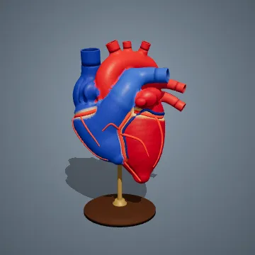
The pump at the middle of the circulatory system, with its great vessels in place.
It has four chambers: two atria that receive blood and two ventricles that push it out.
A resting adult heart beats about 100,000 times a day.
Red in this model means blood carrying oxygen; blue means blood returning to collect more.
Real size: About the size of a closed fist, roughly 5 inches long. This model: Greatly enlarged.
Try this: Give it a program that changes its size up and down to make it beat.
Grades 3-5, 6-8, 9-12 · biology, human body, health
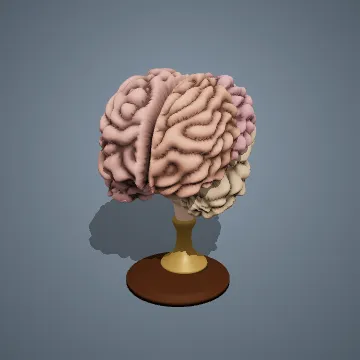
The cerebrum, cerebellum and brainstem, with the folds that pack a large surface into a small skull.
An adult brain weighs about 3 pounds.
It contains roughly 86 billion neurons.
The folds let far more cortex fit inside the skull than a smooth surface could.
Real size: About 6 inches long. This model: Greatly enlarged.
Try this: Walk round it and find the cerebellum at the back, under the two big halves.
Grades 3-5, 6-8, 9-12 · biology, human body, psychology
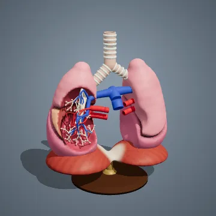
A pair of lungs with the windpipe above, one side opened to show the branching airways inside.
The right lung has three lobes and the left has two, which leaves room for the heart.
Airways branch again and again, ending in hundreds of millions of tiny air sacs called alveoli.
Oxygen crosses into the blood through the thin walls of the alveoli.
Real size: Each lung is about 10 inches tall. This model: Greatly enlarged.
Try this: Count the lobes on each side. Why would the two lungs be different?
Grades 3-5, 6-8, 9-12 · biology, human body, health
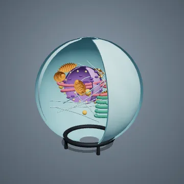
A cell with a wedge cut away so you can look in at the nucleus and the organelles around it.
A typical animal cell is too small to see without a microscope.
The nucleus holds the cell’s DNA.
Mitochondria release the energy the rest of the cell runs on.
Real size: Around 10 to 30 micrometres across. This model: Enlarged thousands of times.
Try this: Build a label for each organelle you can name using Create Model and an info sign.
Grades 3-5, 6-8, 9-12 · biology, cells
Two sugar-phosphate backbones twisted round each other, joined by pairs of bases.
Adenine pairs with thymine, and cytosine pairs with guanine.
The molecule is only about 2 nanometres wide.
The DNA in one human cell would stretch about 6 feet if it were laid out straight.
Real size: About 2 nanometres wide. This model: Enlarged tens of millions of times.
Try this: Program it to rotate slowly so you can follow one strand all the way up.
Grades 6-8, 9-12 · biology, genetics, chemistry
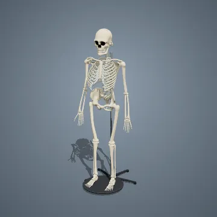
A standing adult skeleton on a display stand, built as a teaching model.
An adult skeleton has 206 bones. A baby starts with more, and some of them fuse as it grows.
The femur, in the thigh, is the longest bone in the body.
The smallest bone is the stapes, deep inside the ear.
Real size: About 5 to 6 feet tall. This model: About life size.
Try this: Stand beside it. Which of its bones can you feel in your own body?
Grades 3-5, 6-8, 9-12 · biology, human body, anatomy
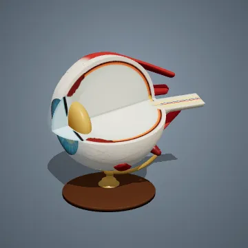
An eyeball on a stand with a section cut away to show the lens, retina and optic nerve.
Light passes through the cornea and the pupil, and the lens focuses it on the retina.
The image on the retina is upside down, and the brain makes sense of it.
The retina holds rods, which work in dim light, and cones, which see colour.
Real size: About 1 inch across. This model: Enlarged about 60 times.
Try this: Find the iris, then find the lens right behind it. Which one changes shape to focus? Teacher: The lens changes shape to focus. The iris changes the size of the pupil.
Grades 3-5, 6-8, 9-12 · biology, human body, physics
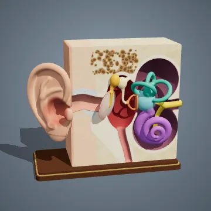
The outer, middle and inner ear in a cutaway block, from the ear flap to the cochlea.
Sound makes the eardrum vibrate, and three tiny bones pass the vibration inward.
Those three bones are the smallest in the body.
The snail-shaped cochlea turns vibrations into nerve signals, and the loops beside it help you balance.
Real size: The ear canal is about 1 inch long. This model: Greatly enlarged, the inner parts more than the outer ear.
Try this: Trace the path of a sound from the outside world to the cochlea. How many parts does it pass?
Grades 3-5, 6-8, 9-12 · biology, human body, physics
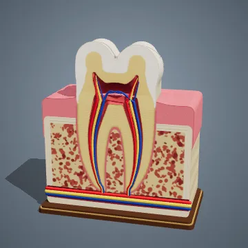
A molar set in the gum and jawbone, cut in half to show the layers inside.
Enamel, the outer layer, is the hardest substance in the human body.
Under it is dentin, and at the centre is the soft pulp, with nerves and blood vessels.
Most adults have 32 teeth, and each root anchors its tooth in the jawbone.
Real size: A molar is under an inch tall. This model: Enlarged about 80 times.
Try this: A cavity starts on the outside. Which layers would it pass through to reach the nerve? Teacher: Enamel, then dentin, then the pulp, where the nerve is.
Grades K-2, 3-5, 6-8, 9-12 · biology, human body, health
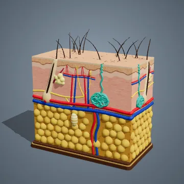
A block of skin showing its layers, with a hair follicle, sweat gland and blood vessels.
Skin is the largest organ of the human body.
Its layers are the epidermis on top, the dermis under it and a fatty layer beneath that.
Sweat glands cool you down as their sweat evaporates.
Real size: Skin is a few millimetres thick, and the fat under it can be much thicker. This model: Enlarged many times, with the layers not to scale.
Try this: Find the sweat gland and follow its duct to the surface. Why would that cool you down?
Grades 3-5, 6-8, 9-12 · biology, human body, health
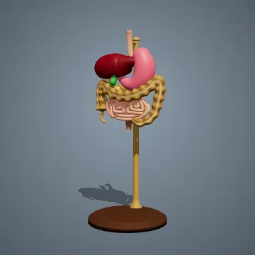
The whole digestive tract on a stand, from the esophagus to the large intestine, with the liver and pancreas.
The small intestine is about 20 feet long, and most nutrients are absorbed there.
The liver makes bile, which helps digest fat, and the gallbladder stores it.
The large intestine mostly takes back water.
Real size: Fills a person’s abdomen. This model: About one and a half times life size, with the small intestine shortened.
Try this: Start at the top and name each part a bite of food passes through.
Grades 3-5, 6-8, 9-12 · biology, human body, health
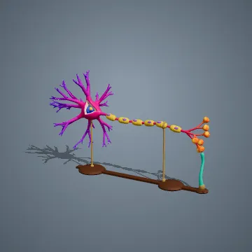
A nerve cell on a long stand, with its branching dendrites, cell body, axon and myelin sheath.
Dendrites receive signals, and the long axon carries them away from the cell body.
A fatty coating called myelin makes signals travel much faster along the axon.
Neurons do not quite touch: signals cross a tiny gap called a synapse.
Real size: The cell body is far too small to see, but an axon can be over 3 feet long. This model: Greatly enlarged, with its axon shortened.
Try this: Follow a signal from a dendrite to the far end of the axon. Where would it go next?
Grades 3-5, 6-8, 9-12 · biology, human body, psychology
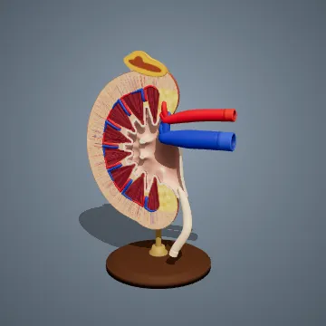
A bean-shaped kidney cut in half to show its cortex, pyramids and the ureter that drains it.
Most people have two kidneys, each about the size of a fist.
Each day your kidneys filter about 150 quarts of fluid from your blood, return almost all of it, and make 1 to 2 quarts of urine.
Each kidney holds about a million tiny filters called nephrons.
Real size: About 4 or 5 inches long. This model: Enlarged about 11 times.
Try this: Find the red and blue vessels. Which brings blood in to be cleaned? Teacher: The red artery brings blood in, and the blue vein carries it away.
Grades 3-5, 6-8, 9-12 · biology, human body, health
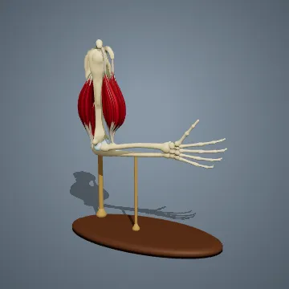
An arm on a stand, with the biceps and triceps shown working on the bones of a bent elbow.
Muscles can only pull, so they work in pairs: one bends a joint and the other straightens it.
The biceps bends the elbow, and the triceps straightens it.
Tendons join muscle to bone, and the forearm works as a lever.
Real size: About 2 feet long. This model: About two and a half times life size, with some muscles left out so the bones show.
Try this: Bend your own elbow and feel your upper arm. Which muscle got shorter and fatter? Teacher: The biceps, on the front of the upper arm.
Grades K-2, 3-5, 6-8, 9-12 · biology, human body, physics
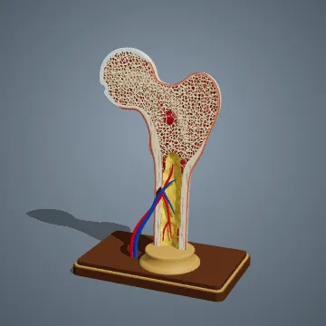
The end of a thigh bone sawn open to show hard compact bone, spongy bone and marrow.
Bone is living tissue with its own blood supply, and it can repair itself after a break.
Dense compact bone forms the outside, and lighter spongy bone fills the ends.
Red marrow inside some bones makes the body’s blood cells.
Real size: A thigh bone is about 18 inches long. This model: Enlarged about 10 times, showing only its upper part.
Try this: Why would a bone be spongy inside instead of solid all the way through? Teacher: Spongy bone is strong for its weight, so the skeleton stays strong without being too heavy to move.
Grades 3-5, 6-8, 9-12 · biology, human body, health
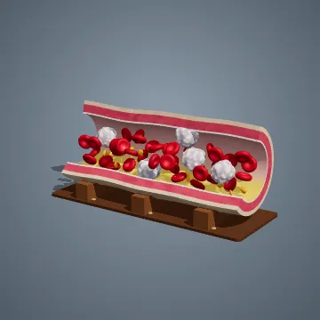
An artery cut open along its length, with red cells, white cells and platelets flowing inside.
Red blood cells carry oxygen, using a protein called hemoglobin.
White blood cells help fight infection, and platelets help blood to clot.
An artery has thick, muscular walls, since it carries blood under pressure from the heart.
Real size: The largest artery is about an inch wide, and a red blood cell is far too small to see. This model: Greatly enlarged, with the cells much larger than the vessel would really show.
Try this: Find one of each kind of cell. Which is there the most of in real blood? Teacher: Red blood cells, by a very long way.
Grades 3-5, 6-8, 9-12 · biology, human body, health
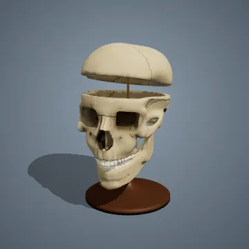
A teaching skull on a stand, with its top cap lifted to show the inside and its jaw hinged open.
An adult skull is made of 22 bones, not counting the tiny bones of the ear.
The lower jaw is the only skull bone that moves freely. Most of the others are locked together at wavy joints called sutures.
A baby’s skull has soft gaps between its bones, which let the head pass through birth and the brain grow.
Real size: About 9 inches tall. This model: Enlarged about 5 times.
Try this: Find the sutures on the top. Why might the bones join with wavy edges instead of straight ones? Teacher: The interlocking edges make a stronger joint, like the teeth of a zip.
Grades 3-5, 6-8, 9-12 · biology, human body, anatomy
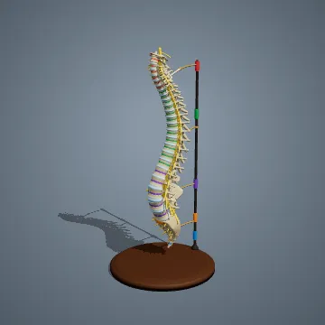
A full spine on a stand, showing its S-shaped curve, cushioning discs and the spinal cord running through it.
An adult spine has 24 separate vertebrae: 7 in the neck, 12 in the chest and 5 in the lower back.
Below those are the sacrum and the tailbone, each made of fused bones.
Its S-shaped curve and soft discs absorb shock, and the bones protect the spinal cord.
Real size: About 28 inches long. This model: About two and a half times life size.
Try this: Count the neck, chest and lower back vertebrae. Why are the lowest ones the biggest? Teacher: 7, 12 and 5. The lowest carry the most weight.
Grades 3-5, 6-8, 9-12 · biology, human body, health
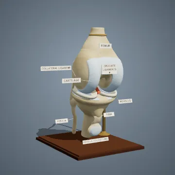
A knee seen from the front, many times life size and slowly bending, with the kneecap folded down so that the crossed ligaments, menisci and cartilage are all in view.
The knee is the largest joint in the human body.
Smooth cartilage covers the ends of the bones, and two rubbery wedges called menisci cushion the joint between them.
Two ligaments cross inside the knee and stop the shin sliding forward or backward. Cruciate means shaped like a cross.
Real size: About 4 to 5 inches across on an adult. This model: About nine times life size, with the skin and muscle left off, the kneecap folded down out of its place in front of the joint, and a simple hinge in place of the knee’s own roll and glide.
Try this: Find the red and blue ligaments in the middle. Walk round to the side and watch them as the knee bends. What would happen to the shin without them? Teacher: The shin could slide forward and backward under the thigh. The two crossed ligaments hold it in place while the knee bends.
Grades 3-5, 6-8, 9-12 · biology, anatomy, health
🦖 Plants & Animals 32 models
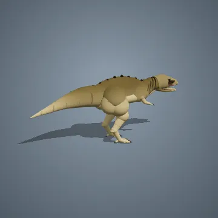
The great Late Cretaceous predator, with its short arms and enormous jaws.
It lived about 68 to 66 million years ago, in what is now western North America.
It grew to about 40 feet long and stood about 13 feet tall at the hip.
Its teeth could be as long as a banana.
Real size: About 40 feet long. This model: Half life size.
Try this: Open Bring it to life and make it turn to watch you as you walk past.
Grades K-2, 3-5, 6-8, 9-12 · paleontology, biology, earth history
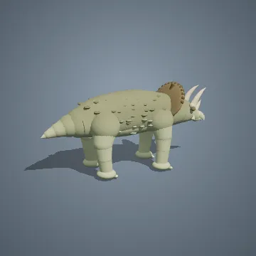
A plant-eating dinosaur with three horns and a broad bony frill.
It lived at the same time and in the same places as Tyrannosaurus rex.
Its two brow horns could reach about 3 feet long.
It was a herbivore, slicing plants with a beak and rows of shearing teeth.
Real size: About 30 feet long. This model: About 60% of life size.
Try this: Place a T. rex beside it, then use the size notes on both cards to set them to scale.
Grades K-2, 3-5, 6-8, 9-12 · paleontology, biology, earth history
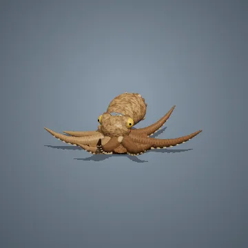
A soft-bodied ocean animal with eight arms and a strikingly intelligent eye.
An octopus has three hearts and blue blood.
Most of its neurons are in its arms rather than in its brain.
With no bones, it can squeeze through any gap bigger than its beak, the only hard part of its body.
Real size: A common octopus spans about 3 feet. This model: About twice life size.
Try this: Look for the shape of its pupil. How is it different from yours?
North America’s best-known butterfly, with its orange wings and black veins.
Monarchs from eastern North America can fly up to 3,000 miles to spend the winter in Mexico.
Their caterpillars eat only milkweed, which makes them taste bad to birds.
The trip back north takes several generations. The monarchs that wintered in Mexico lay eggs in the southern United States, and their young fly on from there.
Real size: A wingspan of about 4 inches. This model: About 16 times life size.
Try this: Open Bring it to life and find a motion that looks like a butterfly.
Grades K-2, 3-5, 6-8, 9-12 · biology, life cycles, ecology
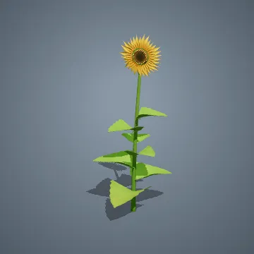
A tall garden sunflower, with the spiral seed head that mathematicians love.
It is the state flower of Kansas.
Young sunflowers turn to follow the sun across the sky. Mature heads settle facing east.
The seeds grow in interlocking spirals, and their counts are usually Fibonacci numbers.
Real size: Around 8 feet tall. This model: About one and a half times life size.
Try this: Plant a row of them and stretch each to a different height, like a bar chart.
A northern leopard frog, spotted and crouched ready to jump.
A frog starts life as a tadpole with gills and a tail, and changes into an adult.
It can breathe through its skin as well as with its lungs.
It pushes food down its throat partly by pulling its eyes into its head.
Real size: About 2 to 4 inches long. This model: Greatly enlarged.
Try this: Its starter program makes it hop. How far can you make it jump?
Grades K-2, 3-5, 6-8, 9-12 · biology, life cycles, ecology
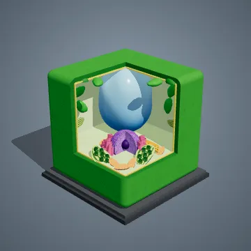
A box-shaped cell with a corner removed, showing its wall, chloroplasts and large vacuole.
A plant cell has a rigid wall outside its membrane, which an animal cell does not.
Chloroplasts capture sunlight and make food by photosynthesis.
A large central vacuole stores water and helps hold the plant up.
Real size: Around 10 to 100 micrometres across. This model: Enlarged thousands of times.
Try this: Place an Animal Cell beside it. List three things that are different.
Grades 3-5, 6-8, 9-12 · biology, cells, plants
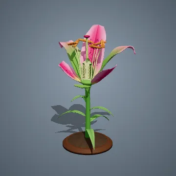
A large flower with part of it opened to show the stamens, the pistil and the ovary.
The stamen makes pollen, and the pistil receives it.
After pollination, the ovary develops into a fruit holding the seeds.
Bright petals attract the insects and birds that carry pollen.
Real size: A few inches across. This model: Enlarged about 12 times.
Try this: Place a Honey Bee beside it. Where would pollen stick to the bee?
Grades K-2, 3-5, 6-8, 9-12 · biology, plants, life cycles
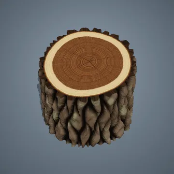
A sawn section of an oak trunk, with its bark, sapwood, heartwood and growth rings.
In many climates a tree adds one growth ring a year, so counting rings gives its age.
A wide ring usually means a good growing year, and a narrow ring a hard one.
New wood grows in the thin cambium layer just under the bark.
Real size: A mature oak can be several feet across. This model: About life size.
Try this: Count the rings from the centre to the bark. How old was this tree? Teacher: This trunk has 40 rings, so the tree was 40 years old. The narrow rings mark hard years.
A slice through an ant nest, with tunnels and chambers for the queen, the young and the food store.
Most ants in a colony are female workers, and the queen lays the eggs.
Ants follow chemical trails, called pheromones, left by other ants.
Different chambers do different jobs, such as raising young and storing food.
Real size: A nest can be far bigger than this slice. This model: Ants enlarged about 30 times, with the queen and eggs drawn larger still.
Try this: Find the queen. Why would her chamber be deep underground?
Grades K-2, 3-5, 6-8, 9-12 · biology, ecology
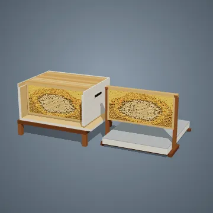
A wooden hive with its side open and a frame lifted out, showing six-sided cells of honey and young bees.
Bees build six-sided cells, a shape that holds a lot of honey for very little wax.
Some cells hold honey and pollen, and others hold the eggs and young of the colony.
Lorenzo Langstroth patented a hive with removable frames in 1852, and most hives still use the idea.
Real size: A hive box is about 20 inches long. This model: Enlarged about 4 times.
Try this: Why would six-sided cells waste less space than round ones? Teacher: Hexagons fit together with no gaps, and round cells leave gaps between them.
Six stages of a bean growing in a slice of soil, from a dry seed to a seedling with true leaves.
A seed needs water, warmth and oxygen to start growing. Most do not need light yet.
The first root usually comes out before any shoot.
The two halves of a bean, called cotyledons, feed the young plant until its leaves can make food.
Real size: The seedling is a few inches tall. This model: Enlarged about 10 times.
Try this: What happens to the cotyledons as the plant grows? Look at each stage in turn. Teacher: They shrink as their stored food is used up, and then they wither.
Grades K-2, 3-5, 6-8, 9-12 · biology, plants, life cycles
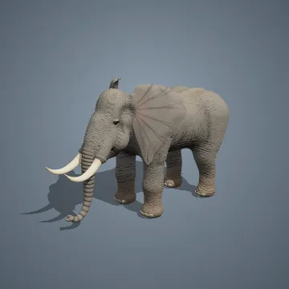
A large savanna elephant with its huge ears, curved tusks and wrinkled skin.
The African savanna elephant is the largest living land animal.
Its trunk has no bones and tens of thousands of muscle bundles, and can pick up something as small as a peanut.
Its huge ears help it to stay cool by giving off heat from the blood inside them.
Real size: Large males are about 11 feet tall at the shoulder. This model: About 60% of life size.
Try this: Place a Woolly Mammoth beside it. How are their ears different, and why might that be? Teacher: The mammoth’s ears were much smaller, which loses less heat in a cold climate.
A T4 virus landing on a bacterium, with its faceted head, tail and six long leg fibers.
A bacteriophage is a virus that infects bacteria, not people.
It lands on a bacterium and injects its DNA through its tail, like a tiny syringe.
Phages were discovered in the 1910s, and they are thought to be the most common life-like things on Earth.
Real size: About 200 nanometres tall. This model: Enlarged about 12 million times.
Try this: Why would a virus need a bacterium at all? What can it not do alone? Teacher: A virus cannot copy itself alone. It has to use the machinery of a living cell.
Grades 6-8, 9-12 · biology, microbiology, health
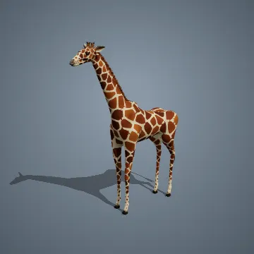
The tallest living land animal, with its long neck, blotched coat and short horn-like ossicones.
Giraffes are the tallest living land animals, and large males reach about 18 feet.
A giraffe has 7 neck bones, the same number as a human, but each is far longer.
Its long dark tongue reaches leaves that other animals cannot, even among acacia thorns.
Real size: Up to about 18 feet tall. This model: About 60% of life size.
Try this: Stand beside it. How many of you would it take to reach its head at this scale?
Six big cut-open cells in a row, from a cell getting ready to divide to two new ones, with chromosomes lining up and pulling apart.
Mitosis is how a cell copies and separates its chromosomes, so it can divide into two new cells with identical chromosomes.
Chromosomes line up across the middle of the cell, and spindle fibers pull their copies apart.
Your body uses mitosis to grow and to replace old or damaged cells.
Real size: A typical animal cell is about a thousandth of an inch wide. This model: Enlarged about 50,000 times, with only four chromosomes shown so you can follow them.
Try this: Count the chromosomes in each cell. Which stage do you see them lined up in the middle? Teacher: Metaphase. Each new cell ends with four, the same number the first cell began with.
Grades 6-8, 9-12 · biology
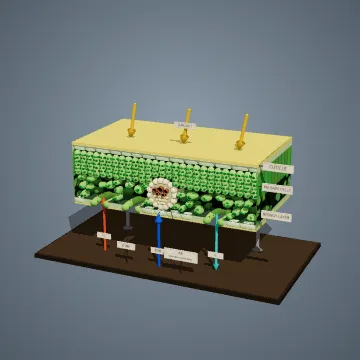
A slice of leaf as big as a table, cut to show its layers of cells, a vein and the tiny pores on its underside.
Leaves use sunlight to turn water and carbon dioxide into sugar and oxygen. This is photosynthesis.
Most of it happens in tiny green chloroplasts, packed into tall cells near the top of the leaf.
Pores called stomata, mostly on the underside, let gases in and out.
Real size: Most leaves are only a few sheets of paper thick. This model: Enlarged about 3,000 to 4,000 times.
Try this: Why are the tall green cells at the top and the loose spongy cells at the bottom? Teacher: The tall cells catch the most light near the top, and the air spaces below let gases move from the stomata.
A rod-shaped bacterium opened along its length to show its loop of DNA and ribosomes, with a long whip-like flagellum behind it.
A bacterium is a single cell with no nucleus. Its DNA floats in the cell in a tangled loop.
Many bacteria swim by spinning their flagella like tiny propellers.
Most bacteria are harmless, and many are useful, including those that help you digest food.
Real size: About 2 millionths of a metre long. This model: Enlarged about a million times, with the flagellum shortened.
Try this: Compare this with the Animal Cell. What does a bacterium not have? Teacher: It has no nucleus and no membrane-wrapped parts such as mitochondria.
Grades 3-5, 6-8, 9-12 · biology, microbiology, health
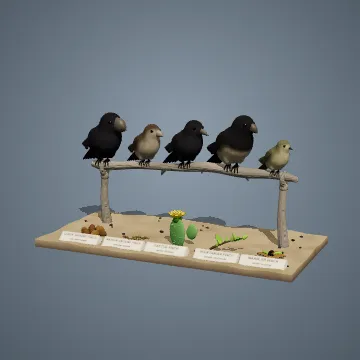
Five finches on a driftwood perch, each with a differently shaped beak and beside the food it suits.
Charles Darwin and his shipmates collected finches like these in the Galapagos Islands in 1835. A bird expert, John Gould, later showed they were closely related.
Related species evolved beaks suited to different foods, from big seeds to insects.
Peter and Rosemary Grant measured average beak size rising in the very next generation after a drought in 1977.
Real size: About 4 to 6 inches long. This model: Enlarged about 8 times.
Try this: Match each beak to its food. What might happen to the big-beaked finches if only tiny seeds were left? Teacher: Birds whose beaks handle the available food survive and breed more, so over generations the average beak can change.
A cluster of mushrooms on a rotting log, cut away to show the white threads that spread through the wood and soil, the real body of the fungus.
Fungi are not plants. They cannot make food from sunlight, and feed on living or dead things instead.
A mushroom is only the fruiting part. Most of the fungus is a hidden net of threads called mycelium.
One honey mushroom in Oregon spreads across about 2,400 acres, and is among the largest living things known.
Real size: A mushroom may be a few inches tall. This model: Enlarged about 8 times, with the spores and threads drawn far larger still.
Try this: Why would a forest fill up with dead leaves and logs if fungi disappeared? Teacher: Fungi are major decomposers. They break dead matter down and return its nutrients to the soil.
Grades K-2, 3-5, 6-8, 9-12 · biology, ecology
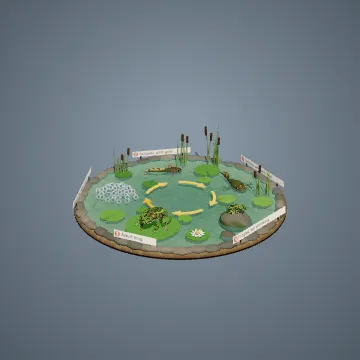
The five stages of a frog around a pond, from a clump of jelly eggs to a tadpole, a tadpole with legs, a froglet and an adult on a lily pad.
Frog eggs have no shell. They are held in a clump of clear jelly that swells in the water.
A young tadpole breathes with gills. As it changes, it grows lungs and can breathe air.
A tadpole does not drop its tail. Its body absorbs the tail and reuses the material.
The change is called metamorphosis, and how long it takes depends on the kind of frog. It can take weeks, or more than a year.
Real size: An egg is smaller than a pea, and an adult frog a few inches long. This model: Every stage made much larger, and not to one scale, so that each can be seen.
Try this: Walk around the pond in order. What is different at each stage, and what has not changed yet? Teacher: The hind legs come first, then the front legs, then the tail shrinks away. The gills give way to lungs along the way.
Grades K-2, 3-5, 6-8, 9-12 · biology, life cycles
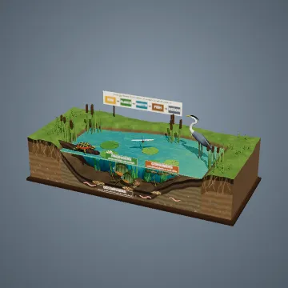
A block of pond cut open from the bank to the mud, with plants, insects, fish, a turtle and a heron all in their places, and the fish swimming.
Producers such as water plants and algae make their own food from sunlight, which is where nearly all the energy in a pond starts.
Consumers eat plants or one another. A dragonfly nymph eats tadpoles, a fish eats the nymph, and a heron eats the fish.
Decomposers such as bacteria and worms break down dead things in the mud and return their nutrients to the water.
Very roughly, only a tenth of the energy at one step of a food chain passes on to the next, which is why there are far fewer herons than insects.
Real size: A pond can be anything from a few yards across to a few acres. This model: A block about 16 feet long, with the animals and plants drawn much larger than they would be and far more crowded together.
Try this: Find three producers and three consumers. Then pick one animal and take it away. What happens to what it eats, and what eats it? Teacher: What it ate tends to increase, and what ate it has less food, so one change spreads through the whole food web.
A cutaway block where an ocean plate slides under a continent, raising volcanoes and an ocean trench.
Earth’s outer shell is broken into plates that move up to about 4 inches a year, about as fast as your fingernails grow, or a little faster.
Where an ocean plate sinks under a continent, it is called subduction.
Subduction builds volcanic mountains such as the Andes and causes large earthquakes.
Real size: Hundreds of miles across. This model: A tiny scale model, with height exaggerated.
Try this: Follow the sinking plate. Where does the magma for the volcano come from? Teacher: Water driven off the sinking plate makes the mantle above it melt. The model shows this simply, as magma rising from the plate.
Grades 3-5, 6-8, 9-12 · earth science, geology
A landscape in a block, from a mountain and river to the sea, with labelled arrows for each stage.
The Sun’s heat evaporates water, mostly from the oceans.
Rising water vapour cools and condenses into clouds, then falls as rain or snow.
About 97% of Earth’s water is in the oceans.
Real size: The whole planet. This model: A small teaching model.
Try this: Follow one raindrop from the mountain all the way back to the cloud.
The orbiting laboratory, with its long truss, huge solar wings and joined modules, on a display mount.
It is about as long as a football field, including the end zones.
It orbits about 250 miles up and circles the Earth about every 90 minutes.
People have lived on it continuously since November 2000.
Real size: About 356 feet across. This model: About 1/10 of life size, with thin parts thickened so they can be seen.
Try this: At one orbit about every 90 minutes, how many sunrises do the crew see in a day? Teacher: About 16.
Grades K-2, 3-5, 6-8, 9-12 · space exploration, engineering, astronomy
The first artificial satellite, a polished sphere with four long antennas, on a display stand.
The Soviet Union launched it on October 4, 1957, and it was the first artificial satellite.
It was a polished sphere about 23 inches across, and it transmitted a simple beep.
Its launch started the space race, and NASA was founded the following year.
Real size: A sphere about 23 inches across, with antennas up to about 9 feet long. This model: The sphere is enlarged about 3 times, with its antennas shortened.
Try this: Why would a beep from space have mattered so much to people in 1957?
Grades K-2, 3-5, 6-8, 9-12 · space exploration, history
A spiralling storm over a warm sea, with a wedge removed to show the calm eye and the towering eyewall.
Hurricanes draw their energy from warm ocean water.
The eye at the centre is calm, and the strongest winds are in the eyewall around it.
In the Northern Hemisphere, hurricanes spin counterclockwise.
Real size: Often hundreds of miles across. This model: A tiny scale model, with height exaggerated.
Try this: Why would a hurricane weaken once it moves over land? Teacher: It loses the warm ocean water that gives it energy.
The orbiting infrared telescope, with its gold mirror of 18 hexagons above a huge silver sunshield.
It launched on December 25, 2021, and orbits the Sun about a million miles from Earth.
Its 21-foot mirror is made of 18 six-sided, gold-coated segments.
A sunshield the size of a tennis court keeps it cold, since it sees heat in the form of infrared light.
Real size: The sunshield is about 70 feet long. This model: About 1/3 of life size, with its shield layers spread further apart.
Try this: Count the mirror segments. Why would a mirror this big need to be made of folding parts? Teacher: It had to fold up to fit inside its rocket. There are 18 segments.
Grades K-2, 3-5, 6-8, 9-12 · astronomy, space exploration, engineering
A cutaway hillside with a cave inside, its stalactites and stalagmites meeting in columns.
Slightly acidic groundwater slowly dissolves limestone, and that hollows out caves.
Stalactites hang down from the ceiling, and stalagmites grow up from the floor.
They build up from minerals left behind by dripping water, usually very slowly.
Real size: Some caves run for hundreds of miles. This model: A small teaching model.
Try this: Find a column. How did a stalactite and a stalagmite come to make it? Teacher: They kept growing toward each other until they met.
A shuttle orbiter on a display stand with its payload bay doors open and robot arm raised.
The shuttles flew 135 missions between 1981 and 2011.
It launched like a rocket and landed like a glider, so the orbiter could fly again.
Thousands of heat-resistant tiles protected it as it came back through the atmosphere.
Real size: About 122 feet long. This model: About 1/5 of life size.
Try this: Why would landing like a glider be different from a capsule falling into the sea?
Grades K-2, 3-5, 6-8, 9-12 · space exploration, engineering, history
The Sun with a wedge removed, showing its core and layers, with sunspots on its surface and a looping prominence rising off it.
In the Sun’s core, hydrogen fuses into helium and releases enormous energy.
That energy takes many thousands of years to work its way out of the Sun.
Once it escapes, sunlight reaches Earth in about 8 minutes. The Sun is about 109 Earths wide.
Real size: About 865,000 miles across. This model: A tiny scale model, with its thinnest layer and surface features enlarged.
Try this: Sunspots are cooler than the surface around them. How can you tell from the model? Teacher: They look dark. They still shine, but less brightly than the hotter surface around them.
Grades 3-5, 6-8, 9-12 · astronomy, physics
A table with the Earth at its centre and eight Moons around it, each half lit by a lamp at one side.
Half of the Moon is always lit by the Sun. The phases come from how much of that half we can see.
The cycle from new Moon to new Moon takes about 29.5 days.
Phases are not caused by Earth’s shadow. That happens only during a lunar eclipse.
Real size: The Moon is about 239,000 miles from Earth. This model: A small teaching model, not to scale.
Try this: Stand at the Earth and look at each Moon in turn. Which one looks full? Teacher: The one on the far side of the Earth from the lamp.
A heavy weight hung in a frame with a pen resting on a turning paper drum, showing the wiggles of a recorded earthquake.
When the ground shakes, the frame moves with it but the heavy weight tends to stay still, so the pen draws the motion.
Modern seismographs were developed in Japan in the 1880s by John Milne and others.
P waves arrive first and S waves after them, and the gap between them tells scientists how far away the earthquake was.
Real size: An 1880s Gray-Milne seismograph was about 2 feet tall. This model: About 7 feet tall, with its drum turning much faster than a real recorder.
Try this: Find where the P waves and S waves begin on the paper. A longer gap between them means what? Teacher: The earthquake was farther away, because P waves travel faster and get further ahead of S waves.
Grades 3-5, 6-8, 9-12 · earth science, physics
A white louvered instrument shelter, a mast with spinning cups and a wind vane, and a rain gauge, standing on a square of grass.
The white box with slatted sides is a Stevenson screen. It lets air through and keeps sunlight off the thermometers inside.
An anemometer measures wind speed from how quickly its cups spin.
A rain gauge measures how deep the rain would be if none of it ran away.
Real size: The mast here is about 10 feet tall. Official stations measure wind higher up, at about 33 feet. This model: Life size.
Try this: Why is the shelter white, and why does it stand up off the ground? Teacher: White reflects sunlight, and being raised keeps it away from heat coming off the ground, so it measures the air.
Grades K-2, 3-5, 6-8, 9-12 · earth science, math
A block of ground cut away to show the layers of soil from leaf litter to bedrock, with roots, worms and burrows.
Soil forms in layers called horizons, from dark topsoil rich in rotted plants down to solid bedrock.
It can take hundreds of years or more for an inch of topsoil to form.
One teaspoon of healthy soil can hold up to a billion bacteria.
Real size: Usually a few feet deep. This model: A block about 9 feet deep, with the layers drawn thicker than most soils and the small animals enlarged.
Try this: Find the darkest layer. Why is it dark, and why do most of the roots stay in it? Teacher: It is full of humus, the rotted remains of plants and animals, and it holds the most nutrients.
A tall column of ocean from the sunlit surface to a deep trench, its layers darkening downward, with an animal in each zone.
Enough sunlight for plant-like plankton to grow reaches only about the top 650 feet of the ocean.
Below about 3,300 feet there is no sunlight at all, and many animals make their own light.
The deepest known point, the Challenger Deep, is nearly 36,000 feet down.
Real size: Nearly 7 miles deep at its deepest. This model: A column about 18 feet tall, with animals much enlarged, its zones drawn at equal heights for clarity, and the hot vent placed deeper than most real ones.
Try this: Why would an animal in the midnight zone make its own light? Find one and think of two reasons. Teacher: Examples include attracting prey, finding a mate, and hiding from or startling predators.
Five cut-away blocks in a row showing an animal dying, being buried, turning to stone and finally being exposed and found.
Most living things never become fossils, because they rot or are eaten first.
Quick burial in mud or sand protects the remains, and over time minerals can replace the hard parts.
Fossils are found when moving rock and erosion bring old layers back to the surface.
Real size: Takes thousands to millions of years. This model: Five blocks in a row about 24 feet long, with the fish kept in one pose so you can follow it.
Try this: Which conditions would make a fossil more likely, and which animals are more likely to leave one? Teacher: Fast burial in water and sediment helps, and animals with hard parts such as bones or shells are far more likely to leave one.
A sphere of pure black inside a glowing, spinning disk of hot gas, with narrow jets shooting from its poles. Based on real images and calculations.
A black hole has gravity so strong that past its edge, the event horizon, not even light can escape.
In 2019 astronomers released the first image of a black hole, in the galaxy M87.
The black hole at the centre of our Milky Way, Sagittarius A*, has about 4 million times the mass of our Sun.
Real size: Sagittarius A* is about 15 million miles across. This model: An artist’s view, about 14 feet across and not to scale.
Try this: If nothing escapes a black hole, how can we know one is there? Teacher: From its effects: gas heated until it glows, and stars orbiting something massive that cannot be seen.
Grades 6-8, 9-12 · astronomy, physics
A dark, icy nucleus inside a glowing coma, with a straight blue ion tail and a curved dust tail, both pointing away from the Sun.
A comet is a chunk of ice, dust and rock orbiting the Sun.
As it nears the Sun, its ice turns to gas and forms a glowing coma and tails.
Its tails point away from the Sun, because sunlight and the solar wind push them. Halley’s Comet returns about every 76 years, next in 2061.
Real size: The nucleus of Halley’s Comet is about 9 miles long, and tails can stretch millions of miles. This model: A model about 18 feet long, with its tails much shortened.
Try this: The little lamp marks the Sun. Which way would the tails point when the comet is heading away from it? Teacher: Still away from the Sun, so the comet then travels roughly tail first.
Grades K-2, 3-5, 6-8, 9-12 · astronomy
A glowing Sun, the Moon and the Earth lined up on a long bench, with the Moon’s dark shadow cone touching a spot on the Earth.
A solar eclipse happens when the Moon passes directly between the Sun and the Earth.
The Sun is about 400 times wider than the Moon, and about 400 times farther away, so the two look nearly the same size in our sky.
Only people inside the small dark shadow, the umbra, see a total eclipse.
Real size: The Sun is about 93 million miles away. This model: About 16 feet long, with sizes and distances not to scale.
Try this: Why do we not get a solar eclipse every month, when the Moon goes round the Earth? Teacher: The Moon’s orbit is tilted, so most months its shadow passes above or below the Earth.
Grades 3-5, 6-8, 9-12 · astronomy, math
The Earth with looping field lines around it, pushed in on the Sun side by the solar wind and stretched into a long tail behind, with auroras at both poles.
Earth’s magnetic field is produced by moving molten iron in its outer core.
The field deflects most of the solar wind, the stream of particles from the Sun.
Some particles are guided toward the poles, where they make the air glow as the aurora.
Real size: On the Sun side the field reaches up to about 40,000 miles into space, and its tail stretches far past the Moon. This model: An Earth about 6 feet wide in a model about 18 feet long, with the field much shortened.
Try this: Why does a compass needle point north, and why are auroras usually seen near the poles? Teacher: The needle lines up with the field. Field lines dip into the Earth near the poles, guiding particles in there.
Two paths from one glowing nebula: an ordinary star that ends as a white dwarf, and a massive star that explodes as a supernova.
Stars form when clouds of gas and dust collapse under gravity.
A star’s mass decides its fate. In about 5 billion years our Sun will start to swell into a red giant. Later it will shrink into a white dwarf.
Massive stars explode as supernovas, leaving a neutron star or a black hole, and scatter new elements into space.
Real size: A star may live for millions or billions of years. This model: A table about 16 feet long, not to scale.
Try this: Follow both paths. Why do scientists say that the iron in your blood came from stars? Teacher: Heavy elements such as iron were made in stars and scattered when stars exploded, and later became part of new stars, planets and people.
Grades 3-5, 6-8, 9-12 · astronomy, physics
A globe with real coastlines travels around a lamp once a year, its tilted axis always pointing the same way, past markers for the solstices and equinoxes.
Earth’s axis is tilted about 23.4 degrees, and it keeps pointing the same way all year, close to the North Star.
Seasons come from that tilt. The half of the planet leaning toward the Sun gets more direct light and longer days.
Distance does not cause the seasons. Earth is closest to the Sun in early January, during winter in the north.
Real size: Earth is about 7,900 miles across and about 93 million miles from the Sun. This model: A globe about 2 feet across on a base about 15 feet wide. The Sun and the distance are not to scale, and the orbit is drawn as a circle.
Try this: Stop watching the globe and watch the top of its axis. Which way does it lean when it passes the December marker, and what does that mean for Kansas? Teacher: The axis never changes direction. In December the north leans away from the Sun, so Kansas gets low sunlight and short days.
Grades 3-5, 6-8, 9-12 · earth science, astronomy
⚛️ Chemistry & Physics 29 models
Six protons and six neutrons in the nucleus, with six electrons in two shells.
Niels Bohr proposed this kind of model in 1913.
It is a simplification: electrons actually occupy fuzzy regions called orbitals, not neat rings.
An atom is almost entirely empty space, and to scale the nucleus would be far too small to see here.
Real size: About 0.3 billionths of a metre across. This model: Enlarged tens of billions of times.
Try this: Press the green arrow to spin it. Count two electrons in the inner shell and four in the outer.
Grades 3-5, 6-8, 9-12 · chemistry, physics
One oxygen atom and two hydrogen atoms, in the bent shape that makes water so unusual.
The two hydrogen atoms sit about 104.5 degrees apart.
That bend makes one side of the molecule slightly positive and the other slightly negative.
This polarity is why water dissolves so many substances.
Real size: About 0.3 billionths of a metre across. This model: Enlarged tens of billions of times.
Try this: Place several and arrange the hydrogens of one toward the oxygen of the next.
Grades 3-5, 6-8, 9-12 · chemistry, biology
Sodium and chloride ions in the repeating cubic pattern that makes every salt grain a tiny cube.
Each sodium ion is surrounded by six chloride ions, and each chloride by six sodium ions.
Chloride ions are noticeably bigger than sodium ions.
The cubic arrangement is why salt grains look like tiny cubes under a magnifier.
The rods only show the pattern. In real salt the ions touch, and nothing like a stick joins them.
Real size: Ions are about 0.28 billionths of a metre apart. This model: Enlarged tens of billions of times.
Try this: Find an ion in the middle of the block and count its six nearest neighbours.
Grades 6-8, 9-12 · chemistry
A row of steel balls hanging on threads, the classic demonstration of momentum.
Swing one ball in and one ball swings out the other side. Swing two and two come out.
It demonstrates conservation of momentum and of energy.
It is named after Isaac Newton, who described the laws of motion, and he did not invent it.
Real size: A desk toy about 7 inches long. This model: Enlarged about 9 times.
Try this: Why do the balls eventually stop? Think about where the energy goes.
Grades 3-5, 6-8, 9-12 · physics
A classroom microscope with an eyepiece, three objective lenses, a stage and focus knobs.
Total magnification is the eyepiece power multiplied by the objective power.
Robert Hooke used one to look at cork and coined the word "cell" in 1665.
The focus knobs raise and lower the stage to bring a slide into focus.
Real size: About a foot tall. This model: Enlarged about 7 times.
Try this: A 10x eyepiece with a 40x objective magnifies how many times?
Grades K-2, 3-5, 6-8, 9-12 · biology, physics, history of science
Three meshed gears of different sizes on a stand, showing how gears trade speed for force.
Two gears meshed side by side, like these, turn in opposite directions.
A small gear driving a big one turns it more slowly but with more force.
The speed ratio is set by the ratio of the numbers of teeth.
Real size: Gears range from wristwatch parts to ship engines. This model: A large demonstration model.
Try this: Count the teeth on two gears. How many turns of the small one make one of the big one?
Grades K-2, 3-5, 6-8, 9-12 · physics, engineering
A lab bench with a beaker, an Erlenmeyer flask, a graduated cylinder, test tubes and a Bunsen burner.
A flask’s narrow neck reduces splashing when you swirl it.
You read a graduated cylinder at the bottom of the curved surface, called the meniscus.
The Bunsen burner was developed in the 1850s and is named after the chemist Robert Bunsen.
Real size: Fits on a lab bench. This model: The glassware is enlarged about 3 times, with the meniscus deepened so it can be seen.
Try this: Which of these would you use to measure a volume exactly? Which to heat a liquid? Teacher: The graduated cylinder measures. The beaker or flask is heated.
A battery, a switch and a glowing bulb joined by wires on a board, in one complete loop.
Current flows only when there is a complete loop, called a closed circuit.
Opening a switch breaks the loop, and the bulb goes out.
Alessandro Volta built the first battery in 1800, and the volt is named after him.
Real size: Fits on a desk. This model: Enlarged about 6 times.
Try this: Trace the path from one end of the battery to the other. What would break it?
Grades K-2, 3-5, 6-8, 9-12 · physics, engineering
A red and blue bar magnet on a board, with iron filings and small compasses showing its field.
Outside a magnet, field lines run from its north pole to its south pole.
Opposite poles attract and like poles repel.
Cut a magnet in half and you get two smaller magnets, each with both poles.
Real size: A classroom bar magnet is a few inches long. This model: Enlarged about 10 times.
Try this: Look at the compass needles. Which way would one point right at the north pole? Teacher: Its north tip would point straight away from the magnet's north pole.
Grades K-2, 3-5, 6-8, 9-12 · physics
A triangular glass prism splitting a beam of white light into a band of colours.
Isaac Newton used prisms in the 1660s to show that white light is a mix of colours.
Glass bends light, which is called refraction. It bends each colour by a different amount, which is called dispersion.
Violet light bends the most and red light bends the least.
Real size: A classroom prism is a few inches long. This model: Enlarged about 10 times, with the fan of colours spread far wider than in real glass.
Try this: Name the colours in order from red. Which one has bent furthest from the white beam? Teacher: Red, orange, yellow, green, blue, indigo, violet. Violet has bent furthest.
Grades K-2, 3-5, 6-8, 9-12 · physics, history of science
A wooden frame with a block and tackle lifting a heavy weight, its rope running round four wheels.
A pulley system is a simple machine: it trades distance for force.
With four rope sections holding the load, you pull with about a quarter of the force.
To make up for that, you pull about four times as much rope.
Real size: Pulleys range from a clothesline to a shipyard crane. This model: A large demonstration model, with its wheels in one plane so the ropes can be counted.
Try this: Count the rope sections holding the weight. How much easier does that make the lift? Teacher: Four sections hold the weight, so you pull with about a quarter of the force: about 100 pounds for this 400-pound weight, ignoring friction. The fifth run is the one you pull.
Grades K-2, 3-5, 6-8, 9-12 · physics, engineering
A freestanding wall of all 118 elements, each a raised tile coloured by its family.
There are 118 known elements, arranged in order of atomic number.
Elements in the same column often behave in similar ways.
Dmitri Mendeleev published an early version in 1869, and left gaps for elements not yet found.
Real size: A classroom chart is a few feet wide. This model: About 16 feet wide.
Try this: Find oxygen and carbon. Which column do the noble gases fill? Teacher: The noble gases fill the far right column, group 18.
Grades 3-5, 6-8, 9-12 · chemistry, history of science
A long wood and leather refracting telescope on a tripod, of the kind Galileo built.
Galileo began building telescopes in 1609, after hearing of the invention.
His best ones magnified about 20 to 30 times.
In 1610 he reported four moons orbiting Jupiter, evidence that not everything circles the Earth.
Real size: About 3 feet long. This model: Enlarged about 3 times.
Try this: Why was seeing moons around Jupiter such an important discovery?
Grades K-2, 3-5, 6-8, 9-12 · astronomy, history of science, physics
A simple motor opened up to show its magnets, its spinning coil, its brushes and its commutator.
Current in the coil makes it a magnet, which is pushed and pulled by the fixed magnets around it.
The commutator reverses the current every half turn, so the coil keeps spinning the same way.
Michael Faraday demonstrated electric motion in 1821.
Real size: A small toy motor is about an inch long. This model: Enlarged many times, with only two poles to keep it simple.
Try this: What would happen if you turned the battery around? Teacher: The current reverses, so the motor spins the other way.
Grades 3-5, 6-8, 9-12 · physics, engineering
A tall coil topped with a metal ring, throwing frozen arcs of artificial lightning.
Nikola Tesla invented it around 1891 to experiment with high-voltage electricity and lighting without wires.
A few turns of thick wire pass energy to a tall coil of thin wire, which makes a very high voltage.
That voltage can break down the air itself, which is what makes the visible sparks.
Real size: From tabletop models to machines many feet tall. This model: A large demonstration model, with its sparks frozen.
Try this: Why would sparks jump from the top ring and not from the bottom?
Grades 3-5, 6-8, 9-12 · physics, history of science
A brass equal-arm balance in perfect level, with a block on one pan and weights on the other.
When the pans are level, both sides hold the same mass.
It works as a lever, with its pivot at the exact middle of the beam.
Balance scales were already in use in ancient Egypt and Mesopotamia.
Real size: A classroom balance is about a foot wide. This model: Enlarged about 6 times.
Try this: Read the weights on the right. What must the block on the left weigh? Teacher: The weights read 5, 2 and 1 pounds, so the block weighs 8 pounds. It is also how an equation works: both sides are equal.
A small telescope on a ball mount, with its side opened to show the two mirrors inside.
Isaac Newton built his reflecting telescope in 1668.
It uses a curved mirror to gather light, which avoids the colour fringes that lenses make.
Most large research telescopes today use mirrors too.
Real size: About 6 inches long. This model: Enlarged about 12 times, with its mirror’s curve drawn deeper so it can be seen.
Try this: Follow the light: in through the open end, to the big mirror, to the small one, then where? Teacher: Out through the side of the tube, to the eyepiece.
Grades 3-5, 6-8, 9-12 · physics, astronomy, history of science
Two connected glass cylinders of oil, where a small piston and a light weight lift a much heavier one.
Pressure on a trapped liquid spreads through all of it equally. This is Pascal’s principle.
A big piston has more area for that pressure to push on, so it lifts with more force.
Here the large piston has 16 times the area of the small one, so 1 pound balances 16 pounds.
Real size: From a car jack to a large machine. This model: A large demonstration model.
Try this: To lift the big piston 1 inch, how far must the small one move? Teacher: About 16 inches. You trade distance for force.
Grades 3-5, 6-8, 9-12 · physics, engineering
Two ball-and-stick models side by side, showing how the same carbon atoms make a gem and a pencil.
Diamond and graphite are both pure carbon. Only the arrangement of the atoms is different.
In diamond, every atom bonds to 4 others in a rigid 3D network, which makes it extremely hard.
In graphite, atoms form flat sheets of hexagons that slide over one another, so it leaves marks on paper.
Real size: Atoms about 0.15 billionths of a metre apart. This model: Enlarged tens of billions of times, with graphite’s layers drawn closer.
Try this: Pick an atom in each model and count how many others it joins directly. Teacher: Four in diamond and three in graphite.
Grades 6-8, 9-12 · chemistry, earth science
A big polished dome on an insulating column, opened to show the belt inside, with a smaller sphere for making sparks.
Robert Van de Graaff developed this machine at Princeton around 1929.
A moving rubber belt carries electric charge up the column to the metal dome.
Like charges push each other apart, so the charge spreads over the outside of the dome.
Real size: Classroom models are about 2 feet tall, and the biggest open-air one is about 40 feet. This model: About 8 feet tall, with its upper roller shown below the dome so you can see it.
Try this: If you touched the dome, why might your hair stand on end? Teacher: Each hair picks up the same kind of charge, and like charges repel, so the hairs push away from one another.
Grades 3-5, 6-8, 9-12 · physics, electricity
A heavy bob swinging on a long wire over a ring of markers, showing that the Earth itself is turning. It really swings here.
In 1851 Leon Foucault hung a pendulum in the Pantheon in Paris to show that the Earth rotates.
The swing keeps its direction while the Earth, and the floor with it, turns underneath.
At the North Pole the swing would seem to go all the way round in about a day. Farther from the pole it takes longer.
Real size: The one in Paris had a wire about 220 feet long. This model: A much shorter model, about 22 feet tall, with its slow turning sped up so you can see it.
Try this: Time one swing there and back. Would a longer wire swing faster or slower? Teacher: Slower. The time depends on the length of the wire, not on how heavy the bob is.
Grades 3-5, 6-8, 9-12 · physics, astronomy, history of science
A tilted spiral in an open channel with a clear side, turning to carry pockets of water up from a pool to a channel at the top.
It is named after the Greek scientist Archimedes, who lived in the 200s BCE, though it may be older.
Each turn of the spiral traps a pocket of water and carries it uphill.
Screw pumps like this are still used today, including in water treatment plants.
Real size: From a few feet to over 30 feet long. This model: A screw about 14 feet long, in an open channel so you can see inside.
Try this: Why does the water not simply run back down the tube? Watch one pocket as the screw turns. Teacher: Each pocket is held in a low point of the spiral. As the screw turns, that low point moves up the tube, and the water stays in it.
Grades K-2, 3-5, 6-8, 9-12 · physics, engineering, history of science
A long wooden ramp with bells set along it, and a ball rolling down faster and faster. Equal spaces of time, growing distances.
Galileo rolled balls down ramps to slow falling down enough to measure it.
He found that distance grows with the square of the time: after 2 units of time a ball has gone 4 times as far, and after 3 units, 9 times as far.
Galileo timed the ball with a water clock. The bells are a later museum idea, spaced so a rolling ball passes one at each equal step of time.
Real size: Galileo’s ramps were several yards long. This model: About 18 feet long.
Try this: Measure the gaps between the bells. What pattern do you see, and what does it tell you about the ball? Teacher: From the ball’s start the gaps grow as 1, 3, 5, 7, 9, the odd numbers, because the ball keeps speeding up.
Grades 3-5, 6-8, 9-12 · physics, math, history of science
A lamp, a card with two narrow slits, and a screen showing the striped pattern they make, with the waves drawn on the bench.
Thomas Young showed in the early 1800s that light can behave as a wave.
Light from two slits spreads out and overlaps. Where crests meet crests it is bright, and where crests meet troughs it is dark.
The result is a row of bright and dark stripes, not just two bright lines.
Real size: A real setup can fit on a table. This model: About 10 feet long, with a red lamp where Young used sunlight, and the waves drawn much larger than real light waves.
Try this: What would you see on the screen if you covered one slit? Teacher: The double-slit stripes would disappear, leaving one broad band of light with only faint bands beside it, because there is no second slit’s light to overlap with.
Grades 6-8, 9-12 · physics, light, history of science
Rows of the shapes electrons occupy in atoms: a sphere, three dumbbells and five more complex forms, on a labelled shelf.
An orbital is the region around a nucleus where an electron is most likely to be found. It is not a path like a planet’s orbit.
Each orbital can hold at most 2 electrons.
An s orbital is a sphere, a p orbital is a dumbbell, and most d orbitals have four lobes.
Real size: An atom is about a tenth of a billionth of a metre wide. This model: Enlarged many billions of times, with a slice cut from the sphere so you can see the nucleus.
Try this: Count the shapes in each row. How many electrons can all the p orbitals hold together? All the d orbitals? Teacher: 3 p orbitals hold 6 electrons, and 5 d orbitals hold 10.
Grades 6-8, 9-12 · chemistry, physics
Three clear tanks holding the same particles as a solid, a liquid and a gas, so you can compare how they are arranged.
In a solid, particles are held in place and can only vibrate.
In a liquid, particles stay close together but can slide past one another.
In a gas, particles are far apart and move freely, so a gas fills its whole container.
Real size: Particles far too small to see. This model: Enlarged many millions of times, with the solid spaced out so you can see its bonds.
Try this: Count the particles in each tank. Why does the gas look so different if the count is the same? Teacher: Each tank holds the same number of particles. Only the spacing and arrangement differ, and in a real gas they would be much farther apart.
Grades K-2, 3-5, 6-8, 9-12 · chemistry, physics
A long rack of fifteen test tubes coloured by indicator from pH 0 to pH 14, with everyday things placed beside their pH.
The pH scale runs from about 0 to 14. Below 7 is acidic, 7 is neutral and above 7 is basic.
Each step on the scale is a tenfold change in acidity.
Lemon juice is about pH 2, pure water is pH 7, and household bleach is about pH 12 or 13.
Real size: A test tube is about 6 inches tall. This model: Enlarged about 5 times.
Try this: How many times more acidic is pH 3 than pH 5? Teacher: 100 times. Two steps of ten is 10 times 10.
Grades 3-5, 6-8, 9-12 · chemistry, biology
The first true battery: a stack of copper and zinc discs separated by salt-soaked cloth. The small glowing lamp is a modern addition.
Alessandro Volta announced his pile in 1800. It was the first battery that gave a steady electric current.
Each cell is a disc of copper or silver and a disc of zinc, with cloth soaked in salt water between them.
The unit of voltage, the volt, is named after him.
Real size: About a foot or two tall. This model: About 7 feet tall.
Try this: Count the copper and zinc pairs. What would happen to the voltage if you stacked twice as many? Teacher: It would be about twice as high, because the voltage of each pair adds up.
Grades 3-5, 6-8, 9-12 · chemistry, physics, history of science
A flask of salty water over a burner, with a long water-cooled condenser dripping pure water into a second flask.
Distillation separates a mixture by boiling it and then cooling the vapor back into a liquid.
When salt water boils, the water becomes vapor and the salt stays behind.
Cold water flowing around the condenser turns the vapor back into liquid.
Real size: About 3 feet long on a lab bench. This model: About 9 feet long.
Try this: Why is the liquid in the second flask clear when the liquid in the first is coloured? Teacher: Only the water boils off. The dissolved salt and dye stay behind in the first flask.
Grades 6-8, 9-12 · chemistry
📐 Math & Geometry 17 models
The five regular solids in a row on a shelf: 4, 6, 8, 12 and 20 faces, each in its own colour.
There are exactly five solids whose faces are all the same regular polygon, meeting the same way at every corner.
For each one, corners minus edges plus faces equals 2. This is Euler’s formula.
They are named after the Greek philosopher Plato.
Real size: Any size at all. This model: A large demonstration set.
Try this: Pick one and count its corners, edges and faces. Does Euler’s formula hold? Teacher: Cube: 8 - 12 + 6 = 2. Icosahedron: 12 - 30 + 20 = 2.
Grades 3-5, 6-8, 9-12 · mathematics, geometry
A 3-4-5 right triangle with a square of real tiles built on each of its sides.
In a right triangle, the squares on the two short sides add up to the square on the longest side.
Here that is 9 tiles plus 16 tiles making 25 tiles, and you can count them.
It is named after Pythagoras, though Babylonian mathematicians knew it more than a thousand years earlier.
Real size: Any size at all. This model: One tile is a foot square.
Try this: Count the tiles on each square, then check that 3 x 3 + 4 x 4 = 5 x 5.
Grades 6-8, 9-12 · mathematics, geometry
A chambered nautilus shell cut in half to show its spiral of growing chambers.
As it grows, the animal adds a new, larger chamber and seals off the old one.
The shell keeps the same shape as it grows, which makes a logarithmic spiral.
It is often said to follow the golden ratio, but measured shells usually do not.
Real size: About 8 inches across. This model: Enlarged about 9 times.
Try this: Count the chambers from the centre out. What happens to their size? Teacher: 30 chambers, plus the open body chamber the animal lived in. Each is about 1.1 times as long as the one before.
A striped band with one half twist, on a stand, with a surface that has only one side.
A Möbius strip has only one side and only one edge.
You can make one by giving a strip of paper a half twist and taping the ends.
August Möbius described it in 1858, and another mathematician found it the same year.
Real size: Any size at all. This model: A large demonstration model.
Try this: Make one out of paper, then cut it down the middle. Can you predict what happens? Teacher: It stays in one piece, as a longer loop with two full twists.
Grades 3-5, 6-8, 9-12 · mathematics, geometry
A fractal pyramid made of 256 small pyramids, the same pattern repeated at every size.
It is a fractal: each part looks like a smaller copy of the whole.
Each step replaces every pyramid with four half-size copies.
After four steps, as here, that makes 4 x 4 x 4 x 4 = 256 small pyramids.
Real size: Any size at all. This model: A large demonstration model.
Try this: How many small pyramids would the next step make? Teacher: 1,024, which is 256 x 4.
Grades 3-5, 6-8, 9-12 · mathematics, geometry
An upright board where balls have bounced through rows of pegs and piled up in a bell curve.
Each ball goes left or right at every peg, as if by a coin toss.
Most balls end up near the middle, since there are more paths that lead there.
The pile makes a bell curve, which also describes many measurements in nature.
Real size: A desktop model is about a foot tall. This model: A large demonstration model.
Try this: How many different paths lead to the far left slot? How many to the middle? Teacher: Just one path leads to the far left slot, and the most paths lead to the middle.
Grades 3-5, 6-8, 9-12 · mathematics, statistics
A wall of coloured bars, each row one whole cut into equal parts, from halves to twelfths.
Every row is the same length, because each one is one whole.
The bigger the bottom number, the smaller each part is.
Parts that line up are equivalent: two quarters reach exactly as far as one half.
Real size: A classroom version is a few feet wide. This model: A large demonstration model.
Try this: How many twelfths line up with one third? What about with one half? Teacher: Four twelfths equal one third, and six twelfths equal one half.
Grades K-2, 3-5, 6-8, 9-12 · mathematics
Four cones on a shelf, each sliced at a different angle to reveal a circle, an ellipse, a parabola and a hyperbola.
Slicing a cone at different angles gives four different curves.
Apollonius of Perga wrote the classic study of them more than 2,000 years ago.
Planets orbit in ellipses, and a thrown ball follows very nearly a parabola.
Real size: Any size at all. This model: A large demonstration set.
Try this: Which slice runs exactly parallel to the side of the cone? Teacher: The parabola.
Grades 6-8, 9-12 · mathematics, geometry
A table showing the number 1,234 in blocks: a thousand cube, hundred flats, ten rods and single ones.
Each place is worth ten of the place to its right.
Ten ones make a rod, ten rods make a flat, and ten flats make a cube.
This table shows 1,234: 1 thousand, 2 hundreds, 3 tens and 4 ones.
Real size: A classroom thousand cube is about 4 inches wide. This model: Enlarged about 10 times.
Try this: Without counting every little square, how would you check there are 1,234 here? Teacher: Count the groups: 1 cube, 2 flats, 3 rods and 4 ones.
Grades K-2, 3-5 · mathematics
A wooden puzzle of seven stacked discs on three pegs, with a printed rule and a count of the moves.
Move all the discs to another peg, one at a time, and never put a bigger disc on a smaller one.
Seven discs take at least 127 moves. Each extra disc roughly doubles that, since the minimum is 2 to the power of n, minus 1.
The French mathematician Édouard Lucas invented it in 1883.
Real size: A desktop puzzle is about a foot wide. This model: Enlarged about 9 times.
Try this: Work out the fewest moves for three discs, then four. Can you see the pattern? Teacher: Three discs take 7 moves and four take 15. Each is double the last, plus one.
A glass-like bottle whose neck passes through its own side and joins its base, with no inside or outside.
A Klein bottle is a surface with no inside or outside, described by Felix Klein in 1882.
In true form it does not cross itself, but that needs four dimensions.
A model in our three dimensions has to pass through itself, as this one does.
Real size: Any size at all. This model: A large demonstration model.
Try this: Compare it with the Möbius Strip. How are they alike? Try tracing a path along the surface. Teacher: Both have only one side, so a path can reach every part of the surface without crossing an edge.
Grades 6-8, 9-12 · mathematics, geometry
Seven coloured pieces cut from one square, shown assembled and rearranged into a cat and a boat.
The tangram is a Chinese puzzle that spread around the world in the early 1800s.
Its seven pieces are 5 triangles, 1 square and 1 parallelogram.
However you arrange all seven, the total area stays the same.
Real size: A puzzle that fits in your hand. This model: Enlarged about 10 times.
Try this: What fraction of the whole square is one of the big triangles? What about the small square? Teacher: A big triangle is one quarter. The small square is one eighth.
Grades K-2, 3-5, 6-8, 9-12 · mathematics, geometry, world cultures
A leaning triangle of numbered tiles where each number is the sum of the two above it. The odd numbers are colored, and a familiar shape appears.
Each number is the sum of the two directly above it.
The numbers in any row add up to a power of 2. Row 1, 3, 3, 1 adds up to 8.
Mathematicians in India, Persia and China knew this triangle centuries before Blaise Pascal wrote about it in the 1650s.
Real size: A pattern of numbers with no real size, and it never ends. This model: The first 13 rows, on a sloped stand about 12 feet wide.
Try this: Add up each row. What pattern do you get? Then read down the third slanting line: 1, 3, 6, 10. What comes next? Teacher: The rows add up to 1, 2, 4, 8, 16, doubling each time. The slanting line is the triangular numbers, so 15 comes next.
Grades 3-5, 6-8, 9-12 · mathematics, history of mathematics
A point travels around a circle of radius 1 while its height draws out a sine wave beside it, so a circle and a wave turn out to be one idea.
On a circle of radius 1, the point at any angle sits at (cos, sin) of that angle: cosine is how far across, and sine is how far up.
Because the radius is the long side of a right triangle, cos² + sin² = 1 for every angle. That is the Pythagorean theorem.
One full turn is 360 degrees, or 2π radians: about 6.28 radius lengths around the edge.
Real size: A circle whose radius is 1 unit, which can be any length. This model: A radius of about 2.5 feet, so 1 unit on the grid is about 2.5 feet. The wave has the same heights, and its length is drawn at half scale.
Try this: At what angles is the height exactly the same as the distance across? Find them on the circle, then find them on the wave. Teacher: At 45 and 225 degrees, where sine and cosine are equal.
Grades 6-8, 9-12 · mathematics, trigonometry
A cone, a sphere and a cylinder of the same width and height, each cut open to show the liquid it holds, beside three tubes that hold exactly the same amounts.
A cone, a sphere and a cylinder with the same width and height have volumes in the ratio 1 : 2 : 3.
In the 200s BCE, Archimedes proved that a sphere holds exactly two thirds of the cylinder around it.
He is said to have asked for a sphere and cylinder on his tomb. The Roman writer Cicero reported finding that tomb in Sicily in 75 BCE.
Real size: A rule that holds at any size. This model: Solids about 3 feet across and 3 feet tall.
Try this: If the cone holds 2 cups, how much do the sphere and the cylinder hold? Check the tubes at the back. Teacher: The sphere holds 4 cups and the cylinder holds 6, keeping the ratio 1 : 2 : 3.
Grades 6-8, 9-12 · mathematics, geometry, history of mathematics
A wheel with a painted mark rolls one full turn along a ruler marked in its own diameters, and lands just past three.
The distance around any circle is about 3.14 times the distance across it. That number is called pi.
Pi is the same for every circle, whether it is a coin or a planet.
Pi never ends and never repeats. In the 200s BCE, Archimedes showed it lies between 3 10/71 and 3 1/7.
Real size: A rule that holds at any size. This model: A wheel about 3 feet across on a ruler about 12 feet long.
Try this: Before the wheel finishes its turn, guess where the mark will touch down. How many wheels across is one trip around? Teacher: A little past 3: one turn covers about 3.14 diameters.
Grades 3-5, 6-8, 9-12 · mathematics, geometry
Eight number wheels showing only 0 and 1 count upward by themselves, each one tipping the next as it rolls over, with the same number in ordinary digits beside them.
Computers store everything as 0s and 1s, called bits, because a tiny switch is either off or on.
Each place is worth double the one to its right: 1, 2, 4, 8, 16, 32, 64, 128.
Eight bits make one byte, which can count from 0 up to 255.
Real size: A computer chip holds billions of far smaller switches. This model: A desk-sized counter about 10 feet wide. Real computers do not use wheels, though early adding machines did.
Try this: Watch the wheels and work out the number before you look at the ordinary digits. What is 0 0 0 0 1 0 1 1? Teacher: 8 + 2 + 1 = 11.
A one-man wooden submarine from the American Revolution, with one side cut open to show its cranks.
David Bushnell built the Turtle in 1775, and it is the first submarine known to have been used in combat.
One person worked it by hand, turning cranks for its propellers and letting water in to sink.
American accounts say its attack on a British warship in 1776 failed, but British records do not mention it. This model is based on later reconstructions.
Real size: About 6 to 7 feet tall, going by later reconstructions. This model: About life size.
Try this: How would letting water in, and pumping it out, make it sink and rise? Teacher: More water makes it heavier than the water it displaces, so it sinks. Pumping out makes it lighter, so it rises.
A brass telegraph key and sounder wired to a battery on a wooden desk, with a printed code chart.
Samuel Morse and Alfred Vail sent a famous message from Washington to Baltimore in 1844.
Pressing the key closes a circuit, and an electromagnet at the far end clicks in response.
Morse code spells letters from short and long signals, called dots and dashes.
Real size: A desktop key is a few inches long. This model: Enlarged about 8 times, with both ends of the line on one desk.
Try this: Use the chart to spell your name in dots and dashes. Why would E be just one dot? Teacher: E is the most common letter in English, so giving it the shortest code saves time.
One cylinder of a car engine cut open and running, with the piston, valves, spark plug and crankshaft moving through intake, compression, power and exhaust.
The four strokes are intake, compression, power and exhaust. Only the power stroke pushes the piston.
The crankshaft turns twice for every full set of four strokes, and a heavy flywheel carries it through the other three.
Nikolaus Otto built the first successful four-stroke engine in 1876.
Real size: A car engine’s cylinder is usually about 3 to 4 inches across. This model: A single cylinder about 7 feet tall, opened up to show the inside and slowed right down.
Try this: Watch the two valves. When is each one open, and when are both of them shut? Why would both need to be shut? Teacher: Both are shut for compression and power, so the mixture can be squeezed and the burning gas can only push on the piston.
A hand-cranked calculating machine of brass and iron from the 1840s. Its number wheels really do work out the square numbers by adding, one turn at a time.
Charles Babbage designed Difference Engine No. 2 between 1847 and 1849, to work out mathematical tables without human mistakes.
It was not built in his lifetime. The Science Museum in London finished a working calculator from his drawings in 1991.
With its printer, that machine has about 8,000 parts and weighs about 5 tons. It can only add, and the method of differences turns other math into adding.
Real size: About 11 feet long and 7 feet tall. This model: About the real length, but with far fewer wheels: three columns of a few digits, where the original has eight columns of 31 digits.
Try this: Read the three columns as the crank turns. Which column stays the same, and how does it feed the others? Teacher: The right-hand column stays at 2. It adds to the middle column (3, 5, 7, 9), which adds to the left column (1, 4, 9, 16, 25), the square numbers.
Grades 3-5, 6-8, 9-12 · computer science, mathematics, history of science, engineering
A concrete dam in a valley, cut open down the middle, with water falling through a pipe to spin a turbine and generator, and power lines heading off to town.
Water held high behind a dam falls through a pipe called a penstock and spins a turbine, which turns a generator.
The higher the water falls and the more of it flows, the more electricity it can make.
A dam is thicker at the bottom because water pressure grows with depth.
Hoover Dam on the Colorado River, built in the 1930s, is about 726 feet tall.
Real size: From a few feet to over 700 feet tall. This model: A made-up dam on a block about 16 feet long, with the turbine and generator drawn much larger than they would be.
Try this: Follow the water from the reservoir to the river below. Where does its energy change form? Teacher: Height becomes speed in the pipe, speed becomes spinning in the turbine, and spinning becomes electricity in the generator.
A beam, a truss, an arch and a suspension bridge side by side over one river, with squeezed parts painted blue and stretched parts painted red, and a truck crossing each.
Every bridge carries its load to the ground through parts being squeezed, called compression, and parts being stretched, called tension.
Stone and concrete are strong when squeezed and weak when stretched, which is why an arch can be built of stone. Steel cable is strong when stretched.
The longest bridge spans in the world are all suspension bridges.
Real size: From a plank over a stream to spans of more than a mile. This model: Four small models, each about 8 feet long, all crossing the same gap so that they can be compared. The red and blue paint shows the main forces and is simplified.
Try this: Pick one bridge and follow the weight of the truck to the ground. Which parts are pushed together and which are pulled apart? Teacher: On the arch, the stone is squeezed all the way to the banks. On the suspension bridge, the deck hangs from cables in tension, and the towers are squeezed.
Grades K-2, 3-5, 6-8, 9-12 · engineering, physics
🗺️ World Geography 16 models
A classroom globe tilted on its stand, with all seven continents and five oceans named.
Earth has seven continents and five oceans, and oceans cover about 71% of its surface.
The distance round the equator is about 24,900 miles.
Earth’s axis tilts about 23.4 degrees, which is why the stand holds the globe at an angle.
Real size: The real Earth is about 7,900 miles across. This model: A very small model, with no country borders so it does not go out of date.
Try this: Walk round it and find the continent you live on. Which ocean is closest to you? Teacher: Asia is the largest continent and the Pacific the largest ocean.
A globe wrapped in the imaginary grid that gives every place on Earth an address, with a pin to find.
Latitude measures how far a place is north or south of the equator, from 0 to 90 degrees.
Longitude measures how far east or west it is of the prime meridian, which runs through Greenwich in England.
One degree of latitude is about 69 miles anywhere on Earth, but degrees of longitude shrink toward the poles.
Real size: The lines are imaginary and go all the way round the Earth. This model: A very small model, with a line every 15 degrees.
Try this: Find the red pin. Read its latitude and longitude from the grid, then work out which US state it is in. Teacher: The pin is at about 38 degrees north, 97 degrees west, in Kansas.
Grades 3-5, 6-8, 9-12 · geography, math
A paper map unrolling from around a globe, with Greenland and Africa marked in the same colours on both.
A curved surface cannot be flattened without stretching it, so every flat world map distorts something.
Gerardus Mercator published this projection in 1569 because it keeps compass bearings as straight lines for sailors.
Africa is about 14 times the area of Greenland, though on this kind of map they look much closer in size.
Real size: A wall map is usually a few feet wide. This model: A Mercator map to true proportion, stopped short of the poles, which it can never reach.
Try this: Compare Greenland and Africa on the globe, then on the map. Where on the map is the stretching worst? Teacher: Near the top and bottom: the stretching grows with distance from the equator.
Grades 3-5, 6-8, 9-12 · geography, math
A globe coloured by the five main climate groups, with a key on its base.
Wladimir Köppen’s climate system sorts places by temperature, rainfall and the plants that grow there.
Its five main groups are tropical, dry, temperate, continental and polar.
Great deserts cluster near 30 degrees north and south, where dry air sinks back toward the ground.
Real size: The real Earth is about 7,900 miles across. This model: A very small model. The zones are simplified, and high mountains are not shown as their own group.
Try this: Find where you live. Then find somewhere on another continent with the same colour.
A big brass compass with a steady needle and all sixteen named directions on its rose.
North, east, south and west are the four cardinal directions. Northeast, southeast, southwest and northwest fall between them.
A compass needle is a magnet that lines up with Earth’s magnetic field, so it points to magnetic north, which is not quite the North Pole.
Bearings are measured clockwise from north, so east is 90 degrees and south is 180.
Real size: A hand compass fits in a palm. This model: Greatly enlarged.
Try this: Stand at the south side of the compass and face north. Which way is west: left or right? Teacher: Left. Facing north, east is on your right and west on your left.
Two peaks and the flat map of the same land side by side, so each line on paper can be followed on the ground.
A contour line joins points at the same height above sea level.
Lines close together mean steep ground, and lines far apart mean a gentle slope.
A saddle is the low point on a ridge between two peaks, and on a map it sits between two sets of closed loops.
Real size: A hill like this might be a mile or two across. This model: A small teaching model. The land and the map are drawn from the same heights.
Try this: Find the steepest side of the big peak on the map, then walk round and check it on the hill.
Grades 3-5, 6-8, 9-12 · geography, math
A river fanning out to the sea, modelled on the Nile: a green triangle of farmland laid across desert.
A delta forms where a river slows at the sea and drops the silt it has been carrying.
The word comes from the Greek letter Δ, because the Nile Delta is roughly that shape.
Most Egyptians live along the Nile and in its delta, on a small part of the country’s land.
Real size: The Nile Delta is about 100 miles long and 150 miles wide along the coast. This model: A small teaching model with the height exaggerated and only a few of its channels.
Try this: Follow the river from the back of the block. How many times does it divide before it reaches the sea?
Grades 3-5, 6-8, 9-12 · geography, earth science
A river looping across its floodplain, wearing away one bank, building up the other, and leaving a cut-off lake behind.
Water runs fastest round the outside of a bend, where it wears the bank away. It slows on the inside, where it drops sand.
That makes each bend grow until the river cuts across the narrow neck and takes the shorter way.
The abandoned loop becomes an oxbow lake. The word meander comes from the winding Maeander River in Turkey.
Real size: Real meanders can be many miles across. This model: A small teaching model with the height exaggerated.
Try this: Find the narrowest neck of land between two bends. What will happen to the river there? Teacher: It will break through, and the loop will be cut off as a new oxbow lake.
Grades 3-5, 6-8, 9-12 · geography, earth science
The highest mountains on Earth, wet and green to the south and a dry plateau to the north.
Mount Everest is the world’s highest mountain above sea level, measured in 2020 at 29,032 feet.
The Himalaya began rising about 40 to 50 million years ago, when India collided with Asia, and they are still rising.
Monsoon winds drop their rain on the southern slopes, which leaves the Tibetan Plateau to the north in a dry rain shadow.
Real size: The range is about 1,500 miles long. This model: A relief model with the height greatly exaggerated and the peaks simplified.
Try this: Compare the south side of the range with the north side. What would you pack for each?
Grades 3-5, 6-8, 9-12 · geography, earth science
A slice through the Grand Canyon, with its real rock layers named from the rim down to the river.
The Grand Canyon is 277 river miles long, up to 18 miles wide and about a mile deep.
The Colorado River cut most of the canyon in the last several million years, but the rocks it cut through are far older.
The dark Vishnu rocks at the bottom are about 1.7 billion years old, and the pale Kaibab Limestone on the rim is about 270 million.
Real size: About a mile deep and up to 18 miles wide. This model: A small teaching model. Each layer’s thickness and the width of the canyon are simplified.
Try this: Walk down the layers from the rim to the river. Which layers make cliffs and which make slopes? Teacher: Hard limestone and sandstone make cliffs, and soft shale wears back into slopes.
Sand dunes around an oasis, cut open to show the buried water that keeps the palms alive.
The Sahara is the largest hot desert in the world, more than 3 million square miles.
Only about a quarter of it, or less, is sand. Most of the rest is bare rock and gravel.
An oasis forms where underground water comes close enough to the surface for plants and wells to reach it.
Real size: The largest dunes stand hundreds of feet tall. This model: A small teaching model with the height exaggerated.
Try this: Look at the front of the block. Why does the water come up here and not everywhere else? Teacher: The ground dips low enough here to reach the water-bearing rock underneath.
A valley carved by ice and drowned by the sea, cut open to show how deep it goes.
A fjord is a valley carved by a glacier and then flooded by the sea when the ice melted.
Norway’s Sognefjord runs about 127 miles inland and is more than 4,000 feet deep.
Many fjords are shallower at the mouth than further in, where a ridge of rock called a sill stands across the entrance.
Real size: The longest fjords run more than 100 miles. This model: A small teaching model with the height exaggerated.
Try this: Look at the cut face at the front. What shape is the valley under the water, and what made that shape? Teacher: A U shape, carved by a glacier. A river would have cut a V.
Grades 3-5, 6-8, 9-12 · geography, earth science
A ring of coral islands round a lagoon, cut open to show the sunken volcano underneath.
An atoll is a ring of coral reef and low islands round a central lagoon.
Charles Darwin proposed that atolls begin as reefs round a volcano, which keep growing upward as the volcano slowly sinks.
Drilling at Enewetak Atoll in 1952 passed through more than 4,000 feet of coral rock and reached the volcanic rock below, as he predicted.
Real size: Many atolls are a few miles to tens of miles across. This model: A small teaching model with the depth greatly compressed.
Try this: Look at the cut face at the front. Why would coral, which needs sunlight, be built on so much old coral rock? Teacher: The volcano sank slowly, and the coral kept growing upward toward the light.
A slice of the Amazon, from the river bank up through the forest’s four layers.
A rainforest has four layers: the emergent trees, the canopy, the understory and the forest floor.
The canopy is so dense that only about 2 to 5% of the sunlight reaches the forest floor.
The Amazon is the largest tropical rainforest in the world, covering more than 2 million square miles.
Real size: Emergent trees can reach about 200 feet or more. This model: A small teaching model, with far fewer trees than a real forest so the layers can be seen.
Try this: Find a macaw. Which layer does it live in, and why might that be a good place for it?
A steep hillside turned into flooded steps, after the terraces of the Philippine Cordilleras.
Terraces turn a slope too steep to plough into level fields that hold water.
Water is led from the forest above and passes down from one field to the next.
The Rice Terraces of the Philippine Cordilleras, built by the Ifugao people, became a UNESCO World Heritage Site in 1995.
Real size: Some of the real terraces climb thousands of feet up a mountain. This model: A small teaching model with far fewer steps than a real hillside.
Try this: Follow a drop of water from the forest to the bottom. How many fields does it pass through?
A diorama from the Queensland coast out to the Coral Sea: a turquoise map of reefs from above, and from the front an open case of corals and swimming fish, with the limestone they built in section beneath.
The Great Barrier Reef runs for about 1,400 miles along the coast of Queensland, Australia, and is made up of about 2,900 separate reefs and 900 islands.
It is the largest structure on Earth made by living things. It was built by tiny animals called coral polyps, each laying down a limestone skeleton.
The living reef on top is only about 6,000 to 8,000 years old. It grows on older reef rock, and complete reefs have stood here on and off for about 600,000 years.
Corals get much of their food and color from tiny algae living inside them. In water that stays too warm they lose the algae and turn white. This is called bleaching: a bleached coral is not dead yet, but it can starve.
Aboriginal Australians have lived in this region for at least 40,000 years, and Torres Strait Islanders for about 10,000. About 70 Traditional Owner groups have ties to the reef today.
Real size: About 1,400 miles long. This model: A made-up stretch on a block about 18 feet long, gathering features from different parts of the reef. Depths are squeezed, and the corals and animals are drawn far larger than the map around them.
Try this: Crouch and look at the cut face under the reef. How much of all that stone is alive? Then find the sand behind the reef and the blue beyond it. Why does the color change so fast? Teacher: Only the thin colored skin is alive. The rest is limestone left by earlier corals. The color changes because the water goes from a shallow lagoon to the very deep Coral Sea at the edge of the continental shelf.
Manhattan from the harbor to the top of Central Park: one street grid, two clusters of towers and the rivers around them.
The grid of avenues and numbered streets comes from the Commissioners' Plan of 1811, drawn when most of the island was still farms, hills and marshes.
The grid's avenues lean about 29 degrees east of true north, to fit the shape of the island.
Broadway is older than the grid, so it cuts across it on a diagonal and leaves wedge-shaped blocks. The Flatiron Building fills one of them.
Central Park is about 2.5 miles long and half a mile wide. It looks natural, but more than 20,000 workers built it, starting in the 1850s.
Real size: The area shown is about 8.5 miles from front to back and 6.5 miles across. This model: About 1 foot to half a mile, with north at the back. Landmarks sit in their true places, but streets are simplified and every building is far bigger and taller than the map scale.
Try this: Stand in the harbor and look up the island. Why do the tall towers gather in two places, with a lower city between them? Teacher: Offices cluster near their customers and each other: around the banks at the southern tip, and in midtown, where shops, theaters and hotels followed people moving north. An older explanation blames the depth of the bedrock, but researchers have found it played little part.
Grades 3-5, 6-8, 9-12 · geography, history, social studies
The old city on its peninsula and the land people made around it. Warm ground was dry land in 1630, and pale ground was once water.
Boston was founded in 1630 on the Shawmut Peninsula, joined to the mainland by a narrow neck of land.
People filled in the mudflats and coves around it for centuries, with the biggest projects in the 1800s. The Back Bay was filled from 1857 and took decades.
Streets on the old peninsula wander, while the Back Bay's run straight, because the Back Bay was planned on paper before it was land.
The Freedom Trail is a red line about 2.5 miles long in the real city's pavement, linking 16 historic sites.
Real size: The area shown is about 3.7 miles across. This model: About 1 foot to a quarter of a mile, with north at the back. The 1630 shore is drawn roughly, and every building is far bigger and taller than the map scale.
Try this: Find the dashed line of the 1630 shore. Is the old John Hancock Tower standing on old land or made land? What about Fenway Park? Teacher: Both stand on made land: the tower on the filled Back Bay and the ballpark on filled marshland in the Fenway.
Grades 3-5, 6-8, 9-12 · geography, history, social studies
The Thames, the Roman town at its crossing and the palaces upriver: a city with two centers and no single plan.
The Romans founded Londinium soon after invading Britain in AD 43, at a place where they could bridge the Thames.
London grew from two centers: the City, the trading town inside the old Roman wall, and Westminster upriver, the seat of kings and Parliament.
After the Great Fire of 1666, Christopher Wren proposed a new street plan, but the city was rebuilt largely along its old streets. His St Paul's Cathedral rose in the middle of it.
Big Ben is the nickname of the great bell. The tower that holds it is the Elizabeth Tower.
Real size: The area shown is about 5 miles across. This model: About 1 foot to a third of a mile, with north at the back. The Roman wall is drawn roughly, and every building is far bigger and taller than the map scale.
Try this: Find the dashed line of the Roman wall, then find the cluster of modern towers north of the river. What do you notice? Teacher: The towers stand in and beside the City of London, the old Roman town, which is still a center of banking and trade nearly two thousand years on.
Grades 3-5, 6-8, 9-12 · geography, history, social studies
The Seine, its islands and the wide straight boulevards that were cut through the old city in the 1850s and 1860s.
From 1853 to 1870, Georges-Eugene Haussmann, working for Napoleon III, cut wide straight boulevards through the crowded medieval streets.
Building rules older than Haussmann, updated in his time, tied a building's height to the width of its street. That, with pale limestone and grey roofs, is why so much of Paris matches.
Twelve avenues meet at the Arc de Triomphe, in a circle long known as the Etoile, French for star.
Soon after the Montparnasse Tower was finished in 1973, the city banned buildings of that height from central Paris.
Real size: The area shown is about 4 miles across. This model: About 1 foot to a quarter of a mile, with north at the back. Only the main boulevards are drawn, some landmarks are nudged to fit, and every building is far bigger and taller than the map scale.
Try this: Stand at the Arc de Triomphe and follow the Champs-Elysees. What lies along that straight line? Teacher: The Champs-Elysees runs to the Place de la Concorde, and the same line carries on through the Tuileries Gardens to the Louvre. It is called the historical axis.
Grades 3-5, 6-8, 9-12 · geography, history, social studies
A city that grew outward in rings from one fortress beside the Moskva River.
A kremlin is a fortress inside a Russian city. Moscow's brick walls were built mainly from 1485 to 1495, with Italian architects in charge.
St Basil's Cathedral was built from 1555 to 1561 on the orders of Ivan the Terrible, to mark the capture of Kazan.
The Boulevard Ring and the Garden Ring follow old walls and earth ramparts, pulled down once the city had outgrown them. Main roads cross them like the spokes of a wheel.
The tall stepped towers are three of the seven Stalin-era high-rises begun around 1947, nicknamed in English the Seven Sisters.
Real size: The area shown is about 3.4 miles across. This model: About 1 foot to a fifth of a mile, with north at the back. The Kremlin and Red Square are enlarged, the roads are simplified, and every building is far bigger and taller than the map scale.
Try this: Walk the green Boulevard Ring from one end to the other. Where does it stop? Then follow a straight road outward from the Kremlin. What does it cross? Teacher: The Boulevard Ring is really a horseshoe whose two ends stop near the river, leaving the south side open. The roads running outward cross each ring in turn, like a spider's web.
Grades 3-5, 6-8, 9-12 · geography, history, social studies
🏛️ Landmarks 24 models
A lion with a human head, carved from the limestone of the Giza plateau.
It is about 240 feet long and 66 feet high.
It was carved around 4,500 years ago, and most scholars link it to the pharaoh Khafre.
Its nose has been missing for centuries.
Real size: About 240 feet long. This model: About 1/12 of life size.
Try this: Place a Pyramid of Giza behind it and arrange them like the real plateau.
Grades K-2, 3-5, 6-8, 9-12 · history, world cultures, art
The largest pyramid at Giza, its courses of stone exposed where the casing has gone.
It was built around 2560 BCE for the pharaoh Khufu.
It was the tallest structure on Earth for more than 3,800 years.
It contains an estimated 2.3 million stone blocks.
Real size: Originally about 481 feet tall. This model: About 1/24 of life size.
Try this: A square base and four triangles: try building one yourself with Create Model.
Grades K-2, 3-5, 6-8, 9-12 · history, mathematics, world cultures
Rome’s great amphitheatre, tiers of arches round an oval arena.
It opened in the year 80 CE.
It held around 50,000 spectators.
Its oval measures about 615 by 510 feet, and its walls rise about 157 feet.
Real size: About 615 feet long. This model: About 1/25 of life size.
Try this: Compare its arches with a modern stadium. What has changed, and what has not?
Grades K-2, 3-5, 6-8, 9-12 · history, world cultures, engineering
A gift from the people of France, standing on its pedestal in New York Harbor.
It was dedicated in 1886.
The statue is about 151 feet tall, and about 305 feet from the ground to the torch.
It is copper, and it turned green as the surface weathered.
Real size: About 305 feet tall with its pedestal. This model: About 1/18 of life size.
Try this: What might it have meant to people arriving by ship at Ellis Island?
Grades K-2, 3-5, 6-8, 9-12 · history, civics, art
The white marble mausoleum built at Agra in memory of Mumtaz Mahal.
The Mughal emperor Shah Jahan commissioned it in memory of his wife, Mumtaz Mahal.
The whole complex was finished around 1653.
It stands about 240 feet tall, and its marble seems to change colour with the light.
Real size: About 240 feet tall. This model: About 1/13 of life size.
Try this: Look at it from all four sides. What do you notice about its symmetry?
Grades K-2, 3-5, 6-8, 9-12 · history, world cultures, art
The marble temple to Athena on the Acropolis of Athens, roofless and weathered.
It was built between 447 and 432 BCE.
Its outer colonnade has 46 Doric columns: 8 across each end and 17 along each side.
The columns swell slightly, a subtle curve called entasis. It is exaggerated here so you can see it.
All 46 columns stand in this model so they can be counted. On the real temple, parts of the colonnade are broken.
Real size: About 228 feet long. This model: About 1/8 of life size.
Try this: Count the columns along one side, remembering not to count the corners twice.
A temple-like front carved straight out of a rose-red cliff in Jordan.
The Nabataean people carved it from the sandstone cliff about 2,000 years ago.
It was not built up from blocks: its carvers cut it down out of the solid rock.
Despite the name, it was probably a royal tomb and not a treasury.
Real size: About 130 feet tall. This model: About 1/6 of life size.
Try this: Why would carving from the top down be easier than starting at the bottom?
Grades K-2, 3-5, 6-8, 9-12 · history, world cultures, art
The white sail-like shells of the concert hall on its point in Sydney Harbour.
Danish architect Jørn Utzon won the design competition in 1957, and it opened in 1973.
Its shells are covered in more than a million cream and white tiles.
Working out how to build the curved shells was one of the hardest parts of the project.
Real size: About 600 feet long. This model: About 1/20 of life size.
Try this: What shapes can you see in the shells? They all come from parts of one sphere.
Grades K-2, 3-5, 6-8, 9-12 · art, engineering, world cultures
The great temple of Cambodia, with its five lotus-bud towers, galleries and surrounding moat.
The Khmer king Suryavarman II built it in the early 1100s, first as a Hindu temple.
It later became a Buddhist site, and it is on Cambodia’s national flag.
Its moat, wider than a football field is long, surrounds the whole temple.
Real size: The central tower is over 200 feet tall. This model: About 1/20 of life size, with the moat and grounds drawn in closer.
Try this: Count the towers from the front and then from a corner. Why might they look different? Teacher: There are five towers. From directly in front, only three can be seen clearly.
Grades K-2, 3-5, 6-8, 9-12 · history, world cultures, art
The Great Enclosure of the medieval African city, with its curved granite walls and conical tower.
Ancestors of the Shona people built this stone city from about the 11th to the 15th centuries.
Its granite walls stand up to about 36 feet tall, and were built with no mortar at all.
It grew rich on trade in gold and ivory, and the country of Zimbabwe takes its name from it.
Real size: The wall of the Great Enclosure is about 820 feet around. This model: About 1/12 of life size, with its doorways and passage widened.
Try this: How could a wall this tall stay up with nothing holding the stones together? Teacher: Carefully fitted stones and the weight of the wall hold it together, and its thick base leans slightly inward.
Grades K-2, 3-5, 6-8, 9-12 · history, world cultures, engineering
The Art Deco skyscraper of New York, stepping back as it rises to its slender mast.
It was finished in 1931, after just over a year of construction.
Its roof is 1,250 feet up, and it was the world’s tallest building for almost 40 years.
Its setbacks, which step the building in as it rises, let light reach the streets below.
Real size: About 1,454 feet tall to the tip of its antenna. This model: About 1/35 of life size.
Try this: Why would a city want tall buildings to get narrower as they rise?
Grades K-2, 3-5, 6-8, 9-12 · history, engineering, art
The white hilltop castle of Japan, with its great main keep and layered curving roofs.
Its great main keep was finished in about 1609.
It is nicknamed the White Heron Castle, after its white plaster walls and its graceful shape.
It was never attacked in battle, and it survived bombing in World War II and a big earthquake in 1995. It became a World Heritage Site in 1993.
Real size: The main keep is about 150 feet tall. This model: About 1/10 of life size, with its grounds drawn in closer.
Try this: Place a Medieval Castle beside it. How are their ideas of defence alike and different?
Grades K-2, 3-5, 6-8, 9-12 · history, world cultures, engineering
The vast mud-brick building of Mali, its towers bristling with palm-wood beams.
It is the largest mud-brick building in the world, and the present building dates from 1907.
The bundles of palm wood sticking out of its walls strengthen them, and serve as scaffolding.
Each year the people of Djenné gather to replaster it with fresh mud, in a great community festival.
Real size: Its platform is about 250 feet on each side. This model: About 1/10 of life size.
Try this: Why would a building of mud need looking after every year, and why might a whole town help?
The domed home of Congress in Washington, D.C., with its long wings for the Senate and the House.
Congress meets here: the Senate in the north wing and the House of Representatives in the south wing.
George Washington laid its cornerstone in 1793.
Its cast-iron dome was built during the 1850s and 1860s, and work went on through the Civil War.
Real size: About 288 feet tall to the top of the statue. This model: About 1/20 of life size.
Try this: Why would a country want its lawmakers to meet in one building with two separate wings? Teacher: Congress has two chambers, the Senate and the House, and each has its own wing.
Grades K-2, 3-5, 6-8, 9-12 · civics, history, art
The great three-tier Roman bridge over the Gard, with its top channel opened up so you can see the water flowing along to the city.
It carried water across a river valley to the Roman city of Nemausus, now Nîmes in France, and was built in the first century CE.
It is about 160 feet tall. Its top tier of 35 small arches is about 900 feet long.
There were no pumps. The channel sloped down the whole way, on average by only about 1 foot in every 3,000.
It was built largely without mortar, and some of its blocks weigh up to 6 tons.
Real size: About 160 feet tall and 900 feet long across the top. This model: About 1/20 size, and shortened to show fewer arches, with a length of the top channel opened up.
Try this: Why would builders stack three rows of arches instead of building one solid wall? Think about stone, cost, and the river. Teacher: Arches use much less stone while carrying the load down the piers, and they let the river flow through, even in a flood.
Grades 3-5, 6-8, 9-12 · history, engineering, ancient rome
The great stepped tower of Sumer, in mud brick with its three staircases meeting at a gateway, drawn with the upper levels archaeologists believe it had.
King Ur-Nammu began it around 2100 BCE, in what is now southern Iraq, for Nanna, the moon god of the city of Ur.
Its core is mud brick, faced with baked brick set in bitumen, a natural tar.
Its base is about 210 feet by 150 feet.
Only the lowest level survives well. The upper levels shown here are a reconstruction, based on Leonard Woolley’s digs of the 1920s and 1930s.
Real size: About 210 by 150 feet at the base, and perhaps 70 to 100 feet tall when new. This model: About 1/20 size. The upper levels and the shrine are an informed reconstruction, not known for certain.
Try this: Look at the holes in the walls of the lowest level. The core behind them is mud brick, which holds water. What might they be for? Teacher: They are thought to have let moisture escape from the mud-brick core as it dried out between rains.
Grades 3-5, 6-8, 9-12 · history, ancient mesopotamia, architecture
The whole Giza Plateau around 2500 BCE, with the pyramids still in their white casing, the Sphinx, temples, tombs, the builders’ town and boats in the harbor, beside the Great Pyramid cut in half to show its chambers.
The three great pyramids were built for the pharaohs Khufu, Khafre and Menkaure, between about 2600 and 2500 BCE.
A pyramid was only the end of a complex. A valley temple stood at the water, and a long covered causeway climbed to a mortuary temple beside the pyramid.
The Great Pyramid was the tallest structure on Earth for more than 3,800 years. It has about 2.3 million blocks, and its sides line up with north, south, east and west to about a tenth of a degree.
Modern evidence points to conscripted laborers rather than slaves. Archaeologists have found their town south of the Sphinx, with sleeping quarters, bakeries, kitchens and workshops.
Papyri found at Wadi al-Jarf in 2013 include a diary by an inspector named Merer, who recorded carrying limestone from Tura to Giza by boat.
The white casing is nearly all gone now, carted away after medieval earthquakes, which is why the pyramids look stepped and brown today.
Real size: The Great Pyramid was about 481 feet tall, and the monuments here spread across about a mile. This model: The positions follow the real plan, with north at the back. The monuments are drawn 1.4 times larger than the plan, and heights of the ground are squeezed. The harbor, the Nile channel and some of the town are informed reconstructions: the river really lay farther east. The cutaway is to its own, larger scale, and its passages are drawn on one plane, though the entrance is really about 25 feet east of the center line.
Try this: Stand at the front and pick the taller of the two big pyramids. Then read their signs and the card. Why might your eyes be fooled? After that, follow one block of stone from the harbor to the top of the Great Pyramid. Teacher: Khafre’s pyramid looks taller because it stands on higher ground, but Khufu’s, the Great Pyramid, was taller: about 481 feet against about 471.
The cracked bronze bell of Philadelphia, hanging in its wooden yoke on a stand.
It was cast in the 1750s for what is now Independence Hall in Philadelphia.
Its inscription reads "Proclaim LIBERTY Throughout all the Land".
People campaigning to end slavery gave it the name Liberty Bell in the 1830s.
Real size: About 3 feet tall and over 2,000 pounds. This model: About twice life size.
Try this: Why do you think people who wanted to end slavery chose this bell as a symbol?
Grades K-2, 3-5, 6-8, 9-12 · history, civics
A full suit of 15th-century steel plate armor on a display stand, with its visor raised.
A full suit weighed about 50 pounds, about the same as the kit modern firefighters carry.
Its weight was spread over the whole body, so a trained knight could run and climb.
Overlapping plates let the joints bend, like the sections of a lobster’s tail.
Real size: About the height of a person. This model: Life size.
Try this: Look at the elbow and knee. How do the plates let them bend?
Grades K-2, 3-5, 6-8, 9-12 · history, engineering
A Japanese suit of lacquered plates laced with silk, seated on a storage chest as it is displayed.
Samurai armor was made of many small lacquered plates, laced together with silk cord.
Lacing made it flexible. Some suits were lighter than European plate armor, but the largest weighed as much or more.
Helmets, called kabuto, often carried a crest that made the wearer easy to recognise.
Real size: About the height of a person. This model: Life size.
Try this: Place a Suit of Knight’s Armor beside it. What is different, and why might that be?
Grades K-2, 3-5, 6-8, 9-12 · history, world cultures
A clay tablet pressed with rows of wedge-shaped marks, the earliest known writing system.
Cuneiform began in Mesopotamia, now mostly in Iraq, more than 5,000 years ago.
Scribes pressed a cut reed into wet clay, and the name means "wedge-shaped".
Many of the earliest tablets are records of goods, such as grain and sheep. The marks on this model are representative.
Real size: Many would fit in your palm. This model: Enlarged about 12 times.
Try this: Why would keeping track of grain and sheep be a reason to invent writing?
Grades 3-5, 6-8, 9-12 · history, language arts, world cultures
A main cord hung with coloured strings tied in knots, the Inca way of keeping records.
The Inca recorded information with knotted cords called quipu, or khipu.
Many use base ten: the position of a knot along the cord gives its place value.
Scholars can read the numbers on many of them, and are still working out what the rest record.
Some cords hold the sum of a group of others, as the last cord of each group does here.
Real size: Cords a foot or two long. This model: Enlarged about 3 times, with every knot tied separately so it can be counted.
Try this: Knots near the top count hundreds, then tens, then ones. Read one cord. Teacher: The first cord from the left reads 352: three knots, then five, then two. The groups total 744, 406 and 367.
Grades K-2, 3-5, 6-8, 9-12 · history, mathematics, world cultures
A light two-wheeled racing chariot of wood and leather, with its yoke and team colours.
Chariot racing was hugely popular in ancient Rome, and teams were known by their colours.
The Circus Maximus in Rome could hold well over 100,000 spectators.
Racing chariots were kept very light, so that the horses could run faster. This model has no horses.
Real size: No real one survives, so its size is estimated from small bronze models and carvings. This model: About life size, with its painting and details a best guess.
Try this: Why would two wheels and light wood matter for a race? What about on a sharp turn?
Grades K-2, 3-5, 6-8, 9-12 · history, world cultures, physics
A blue and white Chinese porcelain jar, painted with a dragon among clouds and waves.
The Ming dynasty ruled China from 1368 to 1644, and its blue and white porcelain became famous worldwide.
The blue comes from cobalt, painted on before the glaze and the firing.
Porcelain is fired so hot that it becomes hard, white and slightly see-through when thin.
Real size: About 1 to 2 feet tall. This model: Enlarged about 4 times.
Try this: Why do you think English speakers came to call fine porcelain "china"?
Grades K-2, 3-5, 6-8, 9-12 · art, history, world cultures
A pierced brass star-map instrument hanging on a stand, used for finding the time from the stars.
Astrolabes began with the ancient Greeks and were greatly developed in the medieval Islamic world.
The pierced top plate is a map of bright stars, which turns over a plate engraved for one latitude.
Sighting a star along the back told its height, and from that its user could work out the time.
Real size: Usually a hand-sized disc. This model: Enlarged about 8 times, with its star map computed for Kansas and its ornament representative.
Try this: Why would one plate only work at one latitude? Think about which stars you can see from Kansas.
Grades 3-5, 6-8, 9-12 · history of science, astronomy, mathematics
A Great Plains settler’s home built from blocks of prairie turf, with a small garden and a stovepipe.
The Homestead Act of 1862 drew settlers to the Great Plains, where there were very few trees to build with.
They cut the tough prairie turf into blocks, and stacked them like bricks.
Thick walls kept these houses cool in summer and warm in winter, though their roofs often leaked.
Real size: About 16 feet wide. This model: About life size.
Try this: What would be good about living in this house? What would be hard?
A bronze urn with eight dragons holding balls above eight open-mouthed toads, to signal an earthquake.
The Chinese scholar Zhang Heng built the first known earthquake detector in the year 132.
A shake made a dragon drop its ball into the toad below, and that was said to show the direction of the quake.
None survives and its inner workings are unknown, so models like this one are based on old descriptions.
Real size: Described as about 6 feet across. This model: About life size.
Try this: Count the dragons. How would eight dragons help tell where a far-off earthquake came from? Teacher: There are eight, facing the eight main compass directions.
Grades K-2, 3-5, 6-8, 9-12 · history of science, earth science, world cultures
A long pole on a pivot with a bucket at one end and a mud counterweight at the other, beside a canal.
A shaduf lifts water from a river or canal to water crops, using a lever and a counterweight.
Tomb paintings show them in ancient Egypt, and they were used in Mesopotamia even earlier.
Farmers still use them in some places today.
Real size: A pole often 10 to 15 feet long. This model: About life size.
Try this: Why would the heavy weight make lifting a full bucket easier? What job does the person do? Teacher: The weight does the lifting. The person pulls the empty bucket down into the water.
Grades K-2, 3-5, 6-8, 9-12 · history, physics, world cultures
An ancient Greek warship with three banks of oars, a bronze ram, a painted eye and a square sail.
A trireme had three levels of oars, worked by about 170 rowers.
Its main weapon was the bronze ram on its bow.
Athenian triremes helped defeat the Persian fleet at the Battle of Salamis in 480 BCE.
Real size: About 120 feet long. This model: About 1/3 of life size, with each tier’s oar blades painted differently so they can be counted.
Try this: Why would three levels of oars be better than one long row? Think about the length of the ship. Teacher: It packs in more rowers, and so more speed and power, without making the ship much longer.
Grades 3-5, 6-8, 9-12 · history, world cultures, engineering
🎻 Arts & Music 19 models
A concert grand with its lid raised, showing the strings and soundboard inside.
Bartolomeo Cristofori built the first pianos in Italy around 1700.
A modern piano has 88 keys: 52 white and 36 black.
Each key throws a felt hammer at its strings, so a piano is both a string and a percussion instrument.
Real size: A concert grand is about 9 feet long. This model: Life size.
Try this: Look at how the strings get shorter toward the high notes.
Grades K-2, 3-5, 6-8, 9-12 · music, physics, history
A violin and bow on a stand, with its scroll, f-holes and four strings.
Its four strings are tuned to G, D, A and E.
The violin took its modern form in Italy in the 1500s.
Antonio Stradivari’s violins from around 1700 are among the most valued instruments in the world.
Real size: About 23 inches long. This model: Enlarged about 4 times.
Try this: Why do you think its body is hollow? What would a solid one sound like?
Grades K-2, 3-5, 6-8, 9-12 · music, physics, history
A goblet-shaped drum from West Africa, carved from one log and tuned with rope.
The djembe comes from West Africa and is closely linked with the Mandinka people.
It gives three main sounds: a deep bass, a tone and a sharp slap.
Its name is often explained by a saying: "anke djé, anke bé", meaning "everyone gather together".
Real size: About 2 feet tall. This model: Enlarged about 2 times.
Try this: Its shape works like a bottle. Where does the deep sound come from?
Grades K-2, 3-5, 6-8, 9-12 · music, world cultures
A wooden studio easel holding a canvas, with a palette of mixed paint beside it.
The canvas shows a colour wheel: primary colours, and the secondary colours they mix to make.
Colours opposite each other on the wheel are called complementary.
Easels may go back as far as ancient Egypt, and a Roman writer mentioned one about 2,000 years ago.
Real size: About 6 feet tall. This model: Life size.
Try this: Which two primaries mix to make the colour opposite red?
Grades K-2, 3-5, 6-8, 9-12 · art, history
A six-string guitar on a stand, with its sound hole, bridge and fretted neck.
Its six strings are usually tuned E, A, D, G, B and E.
Pressing a string behind a fret shortens the part that vibrates, which raises the note.
The hollow body makes the sound of the strings louder.
Real size: About 3 feet long. This model: About twice life size.
Try this: Find the thickest string. Is it the highest note or the lowest? Teacher: The thickest string plays the lowest note.
Grades K-2, 3-5, 6-8, 9-12 · music, physics
A gilded pedal harp with 47 strings, its curved neck, carved column and seven pedals.
A modern concert harp has 47 strings and seven pedals.
The red strings are all Cs and the dark ones are all Fs, so that the player can find their place.
Harps are among the oldest instruments, shown in art from ancient Egypt and Mesopotamia.
Real size: About 6 feet tall. This model: Life size.
Try this: Compare the longest and shortest strings. Which plays the higher note? Teacher: The shortest string plays the highest note.
A five-piece drum kit with a bass drum, snare, toms, hi-hat and cymbals, set up to play.
A kit lets one person play many drums, using both hands and both feet.
The kit grew up in American theatre, ragtime and jazz bands, helped by a reliable bass drum pedal patented in 1909.
Wires under the snare drum rattle against it, which gives its sharp sound.
Real size: About 6 feet wide. This model: Life size.
Try this: Find the biggest and smallest drums. Which plays the deepest note? Teacher: The biggest, the bass drum, plays the deepest note.
Grades K-2, 3-5, 6-8, 9-12 · music, physics
A concert marimba with rosewood bars laid out like a piano keyboard, tube resonators and a set of mallets.
Its ancestors most likely came from Africa, and it became central to the music of Central America.
Longer bars play lower notes, and a tube under each bar makes its sound louder.
Its bars are laid out like the keys of a piano.
Real size: About 7 to 8 feet wide. This model: Life size.
Try this: Compare the bars with the tubes under them. What do you notice about their lengths? Teacher: Both get longer toward the low notes.
Grades K-2, 3-5, 6-8, 9-12 · music, world cultures, physics
A long Japanese zither of paulownia wood, with 13 strings and tall movable bridges.
The koto came to Japan from China more than 1,000 years ago.
Its 13 strings are each raised on a movable bridge, which is shifted to tune it.
Players pluck it with picks worn on the thumb and two fingers.
Real size: About 6 feet long. This model: About life size, with its strings and picks a little enlarged.
Try this: How would moving a bridge change a string’s note? Teacher: Moving it changes the length of string that vibrates. A shorter length plays a higher note.
Grades K-2, 3-5, 6-8, 9-12 · music, world cultures
A polished brass alto saxophone on a stand, with its curved neck, cone-shaped body and many keys.
The Belgian instrument maker Adolphe Sax patented it in 1846.
It is made of brass but counts as a woodwind, because a reed makes the sound.
Its tube widens steadily along its length, in the shape of a long cone.
Real size: An alto is about 2 feet tall. This model: Enlarged about 3 times.
Try this: Compare it with the Trumpet. Why would one count as brass and the other as a woodwind? Teacher: A trumpet player buzzes their lips, and a saxophone player vibrates a reed.
A flat-roofed house of sun-dried mud brick, with roof beams showing, a ladder to the roof and a round outdoor oven.
Adobe bricks are made of earth, water and straw, and are dried in the sun rather than baked in a kiln.
Thick earth walls heat up slowly, so the rooms stay cooler by day and warmer at night.
The adobe homes of Taos Pueblo in New Mexico have been lived in for hundreds of years, and the Taos people have called this valley home for about a thousand.
Real size: About 20 feet across. This model: Life size.
Try this: Adobe suits a hot, dry place. What would happen to these walls in a very rainy village? Teacher: Unprotected mud brick softens and washes away in heavy rain, so adobe needs regular replastering and works best in dry climates.
A wood and bamboo house raised high on posts, with a ladder, a broad thatched roof and shade underneath.
Stilt houses are built in many flood-prone and tropical places, including Southeast Asia and the Amazon.
Raising the floor keeps the home above floodwater and lets cool air flow underneath.
The shady space below is often used for working, storing tools or keeping animals.
Real size: About 20 feet long and 20 feet tall. This model: Life size.
Try this: Put this beside your stream. Which of your other houses would you least like to be in during a flood? Teacher: The houses built on the ground, especially the adobe one, whose walls can be damaged by standing water.
A white clapboard school with a bell on the roof, and rows of desks, a stove and a blackboard inside.
One teacher taught every grade together in one room, and older students often helped younger ones.
In 1919 the United States still had about 190,000 one-room schools.
A bell on the roof called children in to start the school day.
Real size: About 30 feet long. This model: Life size.
Try this: Walk inside and count the desks. If your village has this many children, how many homes should it have? Teacher: There is no single answer. Students should explain the number of children they assume per home, then divide.
Grades K-2, 3-5, 6-8, 9-12 · history, civics
An open-fronted workshop with a glowing hearth, a great leather bellows, an anvil and tools on the wall.
A forge heats iron until it is soft enough to shape with a hammer.
Bellows blow extra air into the fire, which makes it burn much hotter.
Village smiths made and mended tools, hinges, nails and horseshoes.
Real size: About 20 feet wide. This model: Life size.
Try this: Which other things in your village need the smith? Stand by each one and find the iron in it. Teacher: Examples include the horse’s shoes, the well’s fittings, door hinges and farm tools.
A small shop with a painted sign, a big brick oven inside and shelves of fresh loaves.
Bread rises because yeast gives off carbon dioxide gas, which makes bubbles in the dough.
A brick oven is heated with a fire, and the hot bricks keep on baking after the fire is raked out.
In many villages, families without an oven of their own paid to bake at a shared one.
Real size: About 20 feet wide. This model: Life size.
Try this: Follow a loaf backward. Which models does it pass through before it reaches this shelf? Teacher: Wheat plot, then windmill, then bakery. Students can add the granary for storage and the market stall for sale.
A tall stone tower mill whose four big sails turn in the wind, with a cap that can face them into it.
The turning sails drive heavy millstones inside, which grind grain into flour.
On a tower mill only the cap turns, so that the sails can face the wind.
Windmills were used to grind grain in Europe from the 1100s.
Real size: About 32 feet tall to the cap. This model: Life size.
Try this: Why build a windmill on high open ground, away from your barn and trees? Teacher: Tall things nearby block and disturb the wind, and open high ground catches it best.
A wooden stall under a striped awning, stacked with crates of apples, bread and vegetables.
A market is where people who make different things come together to trade.
Long before coins, people swapped goods, which is called bartering, and they also kept track of what they owed each other.
Many towns grew up around a place where a market was held regularly.
Real size: About 10 feet wide. This model: Life size.
Try this: Program it to call out what it sells with a say block. What would a farmer swap for a loaf of bread?
Grades K-2, 3-5, 6-8, 9-12 · economics, history, math
A round stone well under a little roof, with a windlass, a rope and a wooden bucket.
A well is dug deep enough to reach groundwater, the water held in the soil and rock below.
The stone lining stops the sides from falling in.
In 1854 Dr. John Snow traced a deadly cholera outbreak in London to one water pump. His work helped show that dirty water can spread disease.
Real size: About 5 feet across and 9 feet tall. This model: Life size.
Try this: Place this first. People carried water by hand, so how far would you want each home to be? Where should animals NOT be kept? Teacher: Homes should be a short walk away. Animals and waste should be kept well away, because they can pollute the water.
Grades K-2, 3-5, 6-8, 9-12 · science, history, health
A small timber grain store raised up on mushroom-shaped stones, with steps that stop short of the door.
Mushroom-shaped staddle stones lift a granary off the ground, and rats cannot easily climb past the overhang.
Air flowing underneath helps keep the grain dry so it does not rot.
Stored grain is what feeds a village through the winter and until the next harvest.
Real size: About 10 feet square. This model: Life size.
Try this: Why are the steps not joined to the door? What might climb them? Teacher: A gap in the steps stops rats and mice from walking straight up into the grain.
A small arched plank bridge over a section of stream. Place more to make your stream longer.
An arched bridge pushes its load out along the curve and into the ground at each end.
Villages were often built by streams, for water and for power.
A shallow place where people could cross a river was often where a town began.
Real size: A 30-foot section of stream, with a 20-foot bridge. This model: Life size.
Try this: Press the green arrow to add more stream. What does your village get from a stream, and what might it do in a flood?
Grades K-2, 3-5, 6-8, 9-12 · engineering, geography, math
One 10-foot section of split-rail fence. Press its green arrow to lay three more in a straight line.
Fences keep animals in, and just as often keep them out of the crops.
Split rails were cut by driving wedges along the grain of a log.
Each section here is exactly 10 feet long.
Real size: Each section 10 feet long. This model: Life size.
Try this: A crop plot here is 20 feet on each side. How many sections does it take to fence one all the way round? How many for two plots side by side? Teacher: 8 sections for one plot (80 feet of perimeter). 12 for two side by side, since the shared side needs no fence between them (120 feet).
Grades K-2, 3-5, 6-8, 9-12 · math, history
A black and white dairy cow, with a full udder, ready to graze wherever you put her.
A cow’s stomach has four compartments, which help it digest tough grass.
Cows chew cud, bringing food back up to chew it a second time.
A high-producing dairy cow can give several gallons of milk a day.
Real size: About 5 feet tall at the shoulder. This model: Life size, with the eyes drawn a little large.
Try this: Press the green arrow and watch her graze, then open her program and change one number. Can you keep her inside your fence?
Grades K-2, 3-5, 6-8, 9-12 · biology, agriculture
A woolly sheep with a dark face and legs. Place a few together to make a flock.
Sheep were among the first animals people farmed, about 10,000 years ago.
Most wool sheep are sheared about once a year, and the wool grows back.
Sheep are flock animals, and tend to stay together for safety.
Real size: About 2.5 feet tall at the shoulder. This model: Life size, with the eyes drawn a little large.
Try this: What could your village make from wool? Which job would you need to add?
Grades K-2, 3-5, 6-8, 9-12 · biology, agriculture, history
A sturdy pink and spotted farm pig with a round snout and curly tail.
Pigs have very few working sweat glands, so they wallow in mud to keep cool.
Their strong snouts are made for digging up roots.
Pigs can eat kitchen scraps, which turned waste into food for a village.
Real size: About 2.5 feet tall at the shoulder. This model: Life size, with the eyes drawn a little large.
Try this: Pigs can eat scraps, so how close should they be to the houses? How close to the well?
Grades K-2, 3-5, 6-8, 9-12 · biology, agriculture
A speckled hen with three small chicks at her feet, pecking around wherever you put them.
A hen can lay about one egg on most days when conditions are good.
A chick hatches after about 21 days of warming in the egg.
Hens scratch the ground and eat insects and seeds as well as grain.
Real size: A hen is about 1.5 feet tall. This model: Life size, with the eyes drawn a little large.
Try this: Press the green arrow, then change the numbers so they stay near the barn. How many eggs a week might three hens give? Teacher: About 15 to 18, if each hen lays on most days.
Grades K-2, 3-5, 6-8, 9-12 · biology, agriculture
A huge, gentle work horse with feathered feet, wearing a padded collar and harness.
Draft horses are the largest horses, and many weigh around a ton.
A padded collar rests on the horse’s shoulders instead of its throat, so it can pull hard without choking.
Horse hoofs are protected by iron shoes, made and fitted by a smith.
Real size: About 6 feet tall at the shoulder. This model: Life size, with the eyes drawn a little large.
Try this: Press the green arrow and it walks up and down a field. Change the distance so it fits one of your plots. Teacher: A plot is 20 feet long, so the glide distance should be about 20.
A sure-footed brown and white goat with short horns, a beard and sideways pupils.
Goats were among the first animals people farmed, about 10,000 years ago.
They prefer to browse on leaves and shrubs rather than graze on grass.
A goat’s sideways pupils help it see a wide area around it.
Real size: About 2.5 feet tall at the shoulder. This model: Life size, with the eyes drawn a little large.
Try this: A goat can live where a cow cannot. Where in your village is the land too rough for crops?
Grades K-2, 3-5, 6-8, 9-12 · biology, agriculture
A 20-foot square of ripe golden wheat. Press its green arrow to plant three more in a row.
Wheat was first farmed about 10,000 years ago in the Middle East.
The grains grow in a head at the top of each stalk, and are ground to make flour.
Wheat is planted each year, so seed has to be saved from one harvest for the next.
Real size: 20 feet on each side. This model: Life size.
Try this: How many plots will you plant? If each one feeds two people for a year, how many does your village need? Teacher: Answers depend on the village. The figure of two people per plot is a made-up rule for the activity, not a real yield.
Grades K-2, 3-5, 6-8, 9-12 · agriculture, biology, history, math
A 20-foot plot of corn, climbing beans and squash, grown together on low mounds.
Haudenosaunee and other Native American farmers have grown corn, beans and squash together for centuries.
The corn holds up the beans, and the broad squash leaves shade the soil and keep it moist.
Beans host bacteria on their roots that add nitrogen to the soil.
Real size: 20 feet on each side. This model: Life size.
Try this: Compare this with the Wheat Plot. Why might three plants grown together do better than one? Teacher: Each helps the others: support, nitrogen, shade and fewer weeds.
A 20-foot garden of neat rows, with cabbages, carrots, beans and a little wattle edging.
Different vegetables use different nutrients and attract different pests, so gardeners move them around each year. This is crop rotation.
Compost made from scraps and manure puts goodness back into the soil.
Carrots are roots, cabbages are leaves and beans are seeds, all parts of a plant we eat.
Real size: 20 feet on each side. This model: Life size.
Try this: Which animal would you keep near the garden for manure, and which would you fence out so it does not eat everything? Teacher: Answers vary. Manure from cows, horses or hens feeds the soil, while goats and pigs in particular must be kept out.
Grades K-2, 3-5, 6-8, 9-12 · agriculture, biology, health
A 20-foot flooded field with low earth banks and rows of green rice growing out of the water.
Rice feeds more than half of the people in the world.
Many rice farmers flood their fields, because rice can grow in standing water that drowns many weeds.
Low earth banks called bunds hold the water in.
Real size: 20 feet on each side. This model: Life size.
Try this: What does a rice field need that a wheat field does not? Where must it be in your village? Teacher: It needs plenty of water, so it belongs near a stream and on level ground.
Grades K-2, 3-5, 6-8, 9-12 · agriculture, geography, world cultures
A broad old apple tree with red fruit in its branches and windfalls in the grass.
Apples first came from the mountains of Central Asia, around what is now Kazakhstan.
An apple grown from a seed will not be like its parent, so growers copy good trees by grafting.
Bees carry pollen between apple blossoms so that fruit can form.
Real size: About 18 feet tall. This model: Life size, with the apples drawn a little large so you can see them.
Try this: Plant several to make an orchard, and think about what else you might add so the blossoms get pollinated. Search for the beehive.
Grades K-2, 3-5, 6-8, 9-12 · agriculture, biology, history